// 核心：世界坐标 <-> 本地坐标（父物体带旋转与缩放）
double Deg2Rad(double d) => d * Math.PI / 180;
(double x, double y) LocalToWorld((double x, double y) local, (double x, double y) pos, double deg, double scale)
{
double r = Deg2Rad(deg), c = Math.Cos(r), s = Math.Sin(r);
double lx = local.x * scale, ly = local.y * scale;
return (pos.x + lx * c - ly * s, pos.y + lx * s + ly * c);
}
(double x, double y) WorldToLocal((double x, double y) world, (double x, double y) pos, double deg, double scale)
{
double r = -Deg2Rad(deg), c = Math.Cos(r), s = Math.Sin(r);
double dx = world.x - pos.x, dy = world.y - pos.y;
return ((dx * c - dy * s) / scale, (dx * s + dy * c) / scale);
}
var parentPos = (10.0, 5.0);
double parentRot = 30, parentScale = 2;
var childLocal = (1.0, 0.0);
var world = LocalToWorld(childLocal, parentPos, parentRot, parentScale);
var back = WorldToLocal(world, parentPos, parentRot, parentScale);
Console.WriteLine($"父物体 pos={parentPos} rot={parentRot}° scale={parentScale}");
Console.WriteLine($"子物体 local={childLocal}");
Console.WriteLine($" 转成世界坐标 = ({world.x:F3}, {world.y:F3})");
Console.WriteLine($" 再转回本地 = ({back.x:F3}, {back.y:F3}) <- 应等于原值");
Console.WriteLine();
Console.WriteLine("只转方向、不转位置（位移向量）：");
(double x, double y) RotateDir((double x, double y) d, double deg)
{
double r = Deg2Rad(deg), c = Math.Cos(r), s = Math.Sin(r);
return (d.x * c - d.y * s, d.x * s + d.y * c);
}
var dir = RotateDir((1.0, 0.0), 30);
Console.WriteLine($" 本地朝向 (1,0) 经 30° 旋转后 = ({dir.x:F3}, {dir.y:F3}) <- 不受 scale 影响");1- 认识模型的制作流程
美术工种——建模 第一步：建模 第二步：展UV 第三步：材质和纹理贴图
美术工种——动作 第四步：骨骼绑定 第五步：动画制作2- 2D 相关
01- 图片导入相关设置
BMP:是Windows操作系统的标准图像文件格式，特点是几乎不进行压缩，占磁盘空间大
TIF:基本不损失图片信息的图片格式，缺点是体积大
JPG:一般指JPEG格式，属于有损压缩格式，能够让图像压缩在很小的存储空间，一定程度上会损失图片数据，
无透明通道
PNG:无损压缩算法的位图格式，压缩比高，生成文件小，有透明通道
TGA:支持压缩，使用不失真的压缩算法，还支持编码压缩。体积小，效果清晰，兼备BMP的图像质量和JPG
的体积优势，有透明通道
PSD:是PhotoShop（PS）图形处理软件专用的格式，通过一些第三方工具或自制工具可以直接将PSD界面
转为UI界面
其它还支持
EXR、GIF、HDR、IFF、PICT等等
其中Unity最常用的图片格式是
JPG、PNG、TGA三种格式01- 参数设置 — 纹理类型
📎参数设置—纹理类型.xmind
02- 参数设置 — 纹理形状
纹理不仅可以用于模型贴图
还可以用于制作天空盒和反射探针
纹理形状设置 主要就是用于在两种模式之间进行切换03- 参数设置 — 高级设置
高级设置主要是纹理的一些尺寸规则、读写规则、以及MipMap相关设置MipMap 用于 3D 游戏中物体远近的变化（近处清楚，远程模糊）处理
MipMap是什么？
在三维计算机图形的贴图渲染中有一个常用的技术被称为Mipmapping。
为了加快渲染速度和减少图像锯齿，贴图被处理成由一系列被预先计算和优化过的图片组成的文件
这样的贴图被称为mipmap
Mipmap 需要占用一定的内存空间
Mipmap中每一个层级的小图都是主图的一个特定比例的缩小细节的复制品
虽然在某些必要的视角，主图仍然会被使用，来渲染完整的细节。
但是当贴图被缩小或者只需要从远距离观看时，mipmap就会转换到适当的层级
因为mipmap贴图需要被读取的像素远少于普通贴图，所以渲染的速度得到了提升。
而且操作的时间减少了，因为mipmap的图片已经是做过抗锯齿处理的，从而减少了实时渲染的负担。
放大和缩小也因为mipmap而变得更有效率。
如果贴图的基本尺寸是256x256像素的话,它mipmap就会有8个层级。
每个层级是上一层级的四分之一的大小
依次层级大小就是：128x128;64x64;32x32;16x16;8x8;4x4;2x2;1x1(一个像素)
说人话，开启MipMap功能后，Unity会帮助我们根据图片信息生成n张不同分辨率的图片
在场景中会根据我们离该模型的距离选择合适尺寸的图片用于渲染，提升渲染效率04- 参数设置 — 平铺拉伸
平铺拉伸主要设置纹理的平铺规则以及拉伸规则05- 参数设置 — 平台设置（非常重要）
IOS：默认的纹理压缩设置 (PVRTC) 可获得更大的兼容性。
Andorid: ETC 所有平台通用
平台设置主要设置纹理最终打包时在不同平台的尺寸、格式、压缩方式
它非常的重要，因为它影响了你的包大小和读取性能方面的问题📎参数设置—平台设置（非常重要）.xmind
02- Sprite
01- Sprite Editor 设置后必须 APPLY
Sprite Editor-Single 图片编辑
Sprite Editor 设置基础信息，位置等
Custom Out LIne 设置 决定 渲染区域 ，透明区域可以设置区域不进行渲染
Custom Physics shape 决定碰撞判断区域 功能设置和上图一致
Secondary Textures 为图片增加特效效果 讲 shader 的时候才能用到
Sprite Editor Multiple 图片编辑
当我们的图片资源是图集时
我们需要在设置时将模式设置为Multiple
这时我们可以使用Sprite Editor自带的功能进行图集元素分割Sprite Editor Polygon 图片编辑
如果我们使用的资源时多边形资源
我们可以在设置时将模式设置为 Polygon
然后可以在 Sprite Editor 中进行快捷设置02- Sprite Renderer
顾名思义，Sprite Renderer 是精灵渲染器
所有 2D 游戏中游戏资源（除 UI 外）都是通过 Sprite Renderer 让我们看到的
它是 2D 游戏开发中的一个极为重要的组件
2D 对象创建
1. 直接拖入 Sprite 图片
2. 右键创建
3. 空物体添加脚本simple 模式
Sliced 模式
设置成 Full Rect 模式，才能把 Sprite 图标 模式改成 Slied 九宫格（用于按钮，弹窗，背景，）
九宫格模式（ 上下左右 4 个角区域 是不变的，中央十字区域变化）
Tiled 平铺模式
GameObject obj = new GameObject();
SpriteRenderer sr = obj.AddComponent<SpriteRenderer>();//创建一个精灵图片
01.动态的改变图片
sr.sprite = Resources.Load<Sprite>("dead1");//根据名字指定加载Resources文件下的图片
02.动态的加载 图集中的图,是设置成Sprite 图集格式的图，只能通过数组的方式存储 该图集下所有的元素
Sprite[] sprs = Resources.LoadAll<Sprite>("RobotBoyIdleSprite");
sr.sprite = sprs[10];//是有序的存储的，这里可以得到 第11张图
print(sprs[10].name);练习题
01. 写一个工具类，让我们可以更加方便的加载Multiple类型的图集资源
GameObject obj = new GameObject();
SpriteRenderer sr = obj.AddComponent<SpriteRenderer>();
sr.sprite =
MultipleMgr.Instatnce.GetSprite("RobotBoyIdleSprite", "RobotBoyIdleSprite_16");using System.Collections;
using System.Collections.Generic;
using UnityEngine;
public class MultipleMgr
{
private static MultipleMgr instance = new MultipleMgr();
public static MultipleMgr Instatnce => instance;
//存储 大图对应的小图资源的信息
private Dictionary<string, Dictionary<string, Sprite>> dic
= new Dictionary<string, Dictionary<string, Sprite>>();
private MultipleMgr()
{
}
用字典套字典存储，第一个字典里 键为图集名字，值为字典2（键为名字，值为图）
外层 Key（string）：图集名字（入参multipleName）
外层 Value：内层字典 Dictionary<string, Sprite>
内层 Key（string）：单张小图的名称（入参spriteName）
内层 Value（Sprite）：对应的精灵图片资源
/// <summary>
/// 获取Multiple图集中的某一张小图
/// </summary>
/// <param name="multipleName">图集名</param>
/// <param name="spriteName">单张图片名</param>
/// <returns></returns>
public Sprite GetSprite(string multipleName, string spriteName)
{
//判断是否加载过该大图
if( dic.ContainsKey(multipleName) )
{
//判断大图中是否有该小图的信息
if (dic[multipleName].ContainsKey(spriteName))
return dic[multipleName][spriteName];
//得到图集名对应的字典 然后得到小图名对应的精灵图片资源
}
else
{
Dictionary<string, Sprite> dicTmp = new Dictionary<string, Sprite>();
Sprite[] sprs = Resources.LoadAll<Sprite>(multipleName);
for (int i = 0; i < sprs.Length; i++)
{
dicTmp.Add(sprs[i].name, sprs[i]);
}
dic.Add(multipleName, dicTmp);
//判断 是否有该名字的小图
if( dicTmp.ContainsKey(spriteName) )
return dicTmp[spriteName];
}
return null;
}
public void ClearInfo()
{
//清空
dic.Clear();
//卸载资源
Resources.UnloadUnusedAssets();
}
}02.用我提供的角色资源，制作一个通过wasd键 控制其上下左右移动的功能
using System.Collections;
using System.Collections.Generic;
using UnityEngine;
public class PlayerObject : MonoBehaviour
{
public float moveSpeed = 5;
private float h;
private SpriteRenderer sr;
// Start is called before the first frame update
void Start()
{
sr = this.GetComponent<SpriteRenderer>();
}
// Update is called once per frame
void Update()
{
h = Input.GetAxis("Horizontal");
this.transform.Translate(5 * Time.deltaTime * Vector3.right * h);
if (h < 0)
sr.flipX = true;
else if (h > 0)
sr.flipX = false;
}
}03- Sprite Creator
顾名思义，Sprite Creator是精灵创造者
我们可以利用Sprite Editor的多边形工具创造出各种多边形
Unity也为我们提供了现成的一些多边形
它的主要作用是2D游戏的替代资源
在等待美术出资源时我们可以用他们作为替代品
有点类似Unity提供的自带几何体练习题
使用菱形替代资源，制作一个按空格键让角色发射菱形子弹的功能
因为挂载在 Player 下不是通过 该 Scale 的 X 正负来确定方向，
是通过 Flip 的 X 切换左右，所以 通过 FLip 的 bool 值确定 正负 对子弹进行 加减位置操作
using System.Collections;
using System.Collections.Generic;
using UnityEngine;
public class PlayerObject : MonoBehaviour
{
public float moveSpeed = 5;
private float h;
private SpriteRenderer sr;
// Start is called before the first frame update
void Start()
{
sr = this.GetComponent<SpriteRenderer>();
}
// Update is called once per frame
void Update()
{
h = Input.GetAxis("Horizontal");
this.transform.Translate(5 * Time.deltaTime * Vector3.right * h);
if (h < 0)
sr.flipX = true;
else if (h > 0)
sr.flipX = false;
if( Input.GetKeyDown(KeyCode.Space) )
{
//创建子弹预设体
GameObject obj = Instantiate(Resources.Load<GameObject>("BulletObj"),
this.transform.position + new Vector3(sr.flipX?-0.3f:0.3f, 0.5f, 0),
Quaternion.identity);
//告诉子弹应该朝哪里动
obj.GetComponent<BulletObj>().ChangeMoveDir(sr.flipX ? Vector3.left : Vector3.right);
}
}
}using System.Collections;
using System.Collections.Generic;
using UnityEngine;
public class BulletObj : MonoBehaviour
{
public float moveSpeed;
private Vector3 nowDir;
void Start()
{
Destroy(this.gameObject, 3);
}
public void ChangeMoveDir(Vector3 dir)
{
nowDir = dir;
}
void Update()
{
this.transform.Translate(moveSpeed * Time.deltaTime * nowDir);
}
}04- Sprite Mask
05- Sorting Group
每层 之间确定层级， 父 对象管子对象
顾名思义，SortingGroup是排序分组的意思
它的主要作用就是对多个精灵图片进行分组排序
Unity会将同一个排序组中的精灵图片一起排序，就好像他们是单个游戏对象一样
主要作用是对于需要分层的2D游戏用于整体排序
注意事项
1.子排序组，先排子对象 再按父对象和别人一起排 （同层和同层比）
2.多个 挂载排序分组组件的预设体 之间 通过修改 排序索引号来决定前后顺序）
（场景上可能多个同一个预设题，需要调整层级进行排序）06- 图集制作
打图集的目的就是减少DrawCall 提高性能
具体DrawCall是什么在NGUI课程中已经详细讲解
该节课是免费课 即使没有购买 也可以前往观看
在2D游戏开发，以及UI开发中是会频繁使用的功能
所以大家一定要先去看了DrawCall相关的知识再继续往下看只需要选择 Always Enabled
在工程设置面板中打开功能 Edit——>Project Setting——>Editor
Sprite Packer(精灵包装器，可以通过Unity自带图集工具生成图集)
01.Disabled：默认设置，不会打包图集
02.Enabled For Builds（Legacy Sprite Packer）：
Unity仅在构建时打包图集，在编辑模式下不会打包图集
03.Always Enabled（Legacy Sprite Packer）：
Unity在构建时打包图集，在编辑模式下运行前会打包图集
Legacy Sprite Packer传统打包模式 相对下面两种模式来说 多了一个设置图片之间的间隔距离
Padding Power:选择打包算法在计算打包的精灵之间以及精灵与生成的图集边缘之间的间隔距离
这里的数字 代表2的n次方
04.Enabled For Build：Unity进在构建时打包图集，在编辑器模式下不会打包
05.Always Enabled：Unity在构建时打包图集，在编辑模式下运行前会打包图集GameObject obj = new GameObject();
SpriteRenderer sr = obj.AddComponent<SpriteRenderer>();
加载图集资源
SpriteAtlas spriteAtlas = Resources.Load<SpriteAtlas>("MyAtlas");
加载图集资源中的某一张小图
sr.sprite = spriteAtlas.GetSprite("dead1");在一个图集里的图片 Batches:1 为1 就是 一次 DrawCall ，这里是3个图集，
unity会自动判断拖入的多个图片 是否在同一个图集练习题
1. 将我提供给大家的资源制作成图集，并且通过代码加载图集中的一张图片来使用
2. 在场景中有 3 张图片，3 张图片叠在一起放，最底层和最上层的图片在一个图集中，中间的图片和他们两不在一个图集里，请告诉我当前的 DrawCall 数量是多少？
同一个图集的图片算一次 DrawCall，但是如果有一张非该图集的图 夹着在该图集2张图之间，DrawCall 为3次
需要中间图和上下图 完全没有重合，才能恢复03- 2D 物理系统
01- 刚体
对象物体会受力的作用
Simulated（模拟） 勾选， 2D 刚体以及所有子对象 2D 碰撞器和 2D 关节 都能模拟物理效果
Dynamic 动态刚体：受力的作用，要动要碰撞的对象
Kinematic 运动学刚体：通过刚体 API 移动的对象，不受力的作用，但是想要进行碰撞检测
Static 静态刚体：不动不受力作用的静态物体，但是想要进行碰撞检测//加力
Rigidbody2D rigid = this.GetComponent<Rigidbody2D>();
rigid.AddForce(new Vector2(0, 100));
//速度
rigid.velocity = new Vector2(1, 0);02- 碰撞器
碰撞器是用于在物理系统中 表示物体体积的（形状或范围）
刚体通过得到碰撞器的范围信息进行计算
判断两个物体的范围是否接触如果接触
刚体就会模拟力的效果产生速度和旋转编辑碰撞器的 碰撞检测范围
1. 圆形碰撞器2. 盒状碰撞器3. 多边形碰撞器4. 边界碰撞器5. 胶囊碰撞器
6. 复合碰撞器（父对象挂载多个带碰撞器的子对象 所形成的 整个形状）复合碰撞器 ，空心的 物体会 装在 复合碰撞器里面，复合碰撞器一定是配合刚体一起使用的
碰撞检测函数
private void OnCollisionEnter2D(Collision2D collision)
{
}
private void OnCollisionExit2D(Collision2D collision)
{
}
private void OnCollisionStay2D(Collision2D collision)
{
}private void OnTriggerEnter2D(Collider2D collision)
{
}
private void OnTriggerExit2D(Collider2D collision)
{
}
private void OnTriggerStay2D(Collider2D collision)
{
}练习题
在之前练习题的基础上，请用 2D 刚体和碰撞器制作一个玩家，它可以在一个平台上移动跳跃。（注意：移动和跳跃都通过刚体的 API 进行制作，类似 3D 物理系统中刚体加力和给速度）
using System.Collections;
using System.Collections.Generic;
using UnityEngine;
public class PlayerObject : MonoBehaviour
{
public float moveSpeed = 5;
private float h;
private SpriteRenderer sr;
private Rigidbody2D rigidBody2D;
void Start()
{
sr = this.GetComponent<SpriteRenderer>();
rigidBody2D = this.GetComponent<Rigidbody2D>();
}
void Update()
{
h = Input.GetAxis("Horizontal");
//由于 重力 会给予对象 y方向的值 所以我们左右移动 应该只是改变左右速度 y的速度应该保留原有的值
rigidBody2D.velocity = new Vector2(h*moveSpeed, rigidBody2D.velocity.y);
if (h < 0)
sr.flipX = true;
else if (h > 0)
sr.flipX = false;
if( Input.GetKeyDown(KeyCode.Space) )
{
//创建子弹预设体
GameObject obj = Instantiate(Resources.Load<GameObject>("BulletObj"),
this.transform.position + new Vector3(sr.flipX?-0.3f:0.3f, 0.5f, 0),
Quaternion.identity);
//告诉子弹应该朝哪里动
obj.GetComponent<BulletObj>().ChangeMoveDir(sr.flipX ? Vector3.left : Vector3.right);
}
if( Input.GetKeyDown(KeyCode.J) )
{
//给它一个向上的瞬时力
rigidBody2D.AddForce(Vector2.up * 300);
}
}
}03- 物理材质
物理材质 使用 的 优先级 碰撞体>刚体>设置面板 >untiy 内部系统计算 ，
例如 碰撞器有物理材质就全用碰撞器的，没有按照顺序来
// 物理材质是用于决定在物体产生碰撞时这些物体之间的摩擦和弹性表现的
// 通过物理材质我们可以做出类似 斜坡不滑落，小球反弹等效果
Friction :摩擦系数 ，为0 表示没有摩擦力 ， 例如 没有摩擦力地面就是光滑的，稍微倾斜就会移动
Bounciness:反弹程度，0表示灭有弹力，1 表示完美弹力（没有能量损失，一直的弹），例如 蹦床04- 恒定力
恒定力是一个特殊的脚本,它可以给一个 2D 刚体持续添加一个力
在做一些随着时间推移而加速的对象时很适用,比如类似火箭发射等效果
恒定力脚本会线性的为对象添加力和扭矩力 让其移动和旋转Force: 物理更新时施加于 2D 刚体上的线性力
Relative Force: 物理更新时施加的线性力（相对刚体对象坐标系）-相对自己的坐标系方向
Torque: 物理更新时施加于 2D 刚体的扭矩力05- 效应器
效应器是配合 2D 碰撞器一起使用
可以让游戏对象在相互接触时产生一些特殊的物理作用力
可以通过 2D 效应器，快捷的实现一些 传送带 互斥 吸引 漂浮 单向碰撞等等效果01区域效应器 - 力的综合体
主要作用：在一个区域内让游戏对象受到力和扭矩力的作用
可实现传送器和浮力的感觉，区域效应器 需要 2 个组件
Use Collider Mask：是否启用碰撞器遮罩，如果开启才会出现下面的 Collider Mask，
可以通过选择层，决定该效应器只会作用于哪些层的对象
Use Global Angle：勾选将使用世界坐标系角度，如果不勾选，角度为局部角度
Force Angle：施加力的角度
Force Magnitude：施加力的大小
Force Variation：施加力的随机大小变化 会在 Force Magnitude 基础上根据该值进行随机变化
ForceTarget：效应器在目标对象上施加力的作用点
Collider：以碰撞器的当前位置（如果碰撞器有偏移，没有位于质心，可能会产生扭矩力，带来旋转）
Rigidbody：以刚体的当前质心（不会产生扭矩力）
Drag：阻力
Angular Drag：扭矩阻力02浮力效应器 知识点
主要作用：模拟流体行为，浮动和阻力相关设置，让玩家在该区域看起来像在水里移动
Density：流体密度，密度较大，碰撞体会下沉，密度越小碰撞体会上浮；密度和流体相同的碰撞体会浮在
流体中
Surface Level：定义浮力流体的表面位置，对象高于此线时，不会对其施加浮力，以下或者相交会施加浮力
沿世界 Y 轴偏移
Linear Drag：影响对象在水中移动的阻力系数
Angular Drag：影响对象在水中旋转的阻力系数
Flow Angle：流体流动方向相对世界控件的角度，沿指定方向施加浮力
Flow Magnitude：与 FlowAngle 结合使用，前者决定力的角度，该值确定浮力大小
Flow Variation：随机改变流体力的值03点效应器 知识点
主要作用：模拟磁铁 吸引或者排斥的效果
Force Magnitude：施加力的大小
Force Variation：施加力的大小变化
Distance Scale：效应器和目标之间距离的缩放。计算距离时，会按该比值对距离进行缩放
Force Source：力源来自哪个位置，从该点计算距离。
Collider：碰撞器的位置
Rigidbody：刚体的位置
Force Target：作用力目标位置，用该点计算位置
Collider：碰撞器的位置，如果碰撞器有偏移，可能会产生扭矩力
Rigidbody：刚体的位置，不会产生扭矩力
Force Mode：计算力的模式
Constant：忽略源和目标之间相隔的距离
Inverse Linear：反线性距离计算，距离越远，力的大小呈线性减小
Inverse Squared：反平方距离计算，力的大小呈指数减小（按平方下降），类似现实世界重力04平台效应器 知识点
是表面触发效果的所以不勾选 is trigger 触发器
主要作用：2D 游戏当中的平台或可往上跳跃的墙壁，可以往上跳的平台，跳上去后就不能落下来
Side Arc 设置范围
Rotational Offset：旋转偏移量，控制平台角度偏移
Use One Way：是否使用单向碰撞行为
Use One Way Grouping：当平台式有多个碰撞器组合时，可以通过它将所有碰撞器设置为单向碰撞行为
Surface Arc：以局部坐标系下向上的方向为中心，填写一个角度值，定义不允许通过的表面，该角度外的
其它地方视为单向碰撞
Use Side Friction：是否应该在平台两侧使用摩擦（使用就可以贴在边上）
Use Side Bounce：是否应该在平台两侧使用弹性
Side Arc：用于定义左右两侧平台的响应弧度05表面效应器 知识点
主要作用：模拟传送带
是表面触发效果的所以不勾选 is trigger 触发器
Speed：表面保持的速度
Speed Variation：速度的随机增加值
Force Scale：缩放沿表面移动时施加的力。如果是 0 表示不施加力，相当于禁用。值越低越慢，
值越高越快，建议不要设置为 1，因为当设置为 1 时可能会抵消施加在物体上的其它力，比如跳跃的力
Use Contact Force：是否对接触物体表面的触点施加力，如果选择会让对象旋转，如果不开启则不会旋转
Use Friction：是否使用摩擦力
Use Bounce：是否使用弹力效应器其实只是 Unity 为我们写好的一些 2D 游戏中常用功能的一些代码
在实际开发中我们不应该过于依赖效应器
如果发现效应器和自己的游戏需求不太匹配时
我们完全可以自己实现符合需求的 “效应器”04- Spriteshape
01- Sprite Shape Profile 精灵形状概述文件
Open Shape 所有角度使用同种图
Closed Shape 4 个角度的图片都可以单独设置，自动判断什么角度用什么资源
02- Sprite Shape Renderer Sprite Shape Controller 精灵形状渲染器和控制器
精灵形状渲染器
该控件主要是控制 材质、颜色 以及和其它 Sprite 交互时的排序等等信息
Color：颜色
Mask Interaction：遮罩相互作用规则设置
Fill Material 和 Edge Material：填充材质和边缘材质
Sorting Layer 和 Order in Layer：排序相关Profile:使用的精灵形状概述文件
Detail ：经历形状的质量 高中低 三种质量
Is Open Ended：是否是开放的，不封闭的
Adaptive UV：自适应 UV，如果开启，会自动帮助我们判断是平铺还是拉伸
开启后只有宽度够才会平铺，如果宽度不够会拉伸
不开启始终平铺，但是可能会出现裁剪效果
一般根据你的实际效果进行选择
Optimize Geometry：优化三角形数量，勾选后会最小化精灵图形中的三角形数量
Enable Tangents：是否启用切线计算功能
如果你的着色器中需要切线信息参与计算，则勾选
Corner Threshold：角阈值，当拐角处的角度达到这个阈值时将使用角图片
Stretch UV：是否拉伸 UV，如果勾选纹理的 UV 将伸展到整个精灵形状的直线上
Pixel Per Unit：禁用拉伸 UV 时才有，Unity 单位对应多少像素，较高的值会较小纹理的大小
Worldspace UV：根据世界控件的 UV 填充纹理地形设置碰撞器- 边缘碰撞器 确定碰撞范围
05- Tilemap 瓦片地图
01- 瓦片资源
Tilemap一般称之为 瓦片地图或者平铺地图
是Unity2017中新增的功能
主要用于快速编辑2D游戏中的场景
通过复用资源的形式提升地图多样性
工作原理就是用一张张的小图排列组合为一张大地图
它和SpriteShape的异同
共同点
他们都是用于制作2D游戏的场景或地图的
不同点
1.SpriteShape可以让地形有弧度,TileMap不行
2.TileMap可以快捷制作有伪“Z”轴的地图，SpriteShape不行方法一：Assets——>Create——>Tile
方法二：在Tile Palette瓦片调色板窗口创建
1.首先新建一个瓦片地图编辑文件 2.将资源拖入到窗口中选择要保存的路径
Preview：预览图
Sprite：瓦片关联的精灵纹理
Color：瓦片色调颜色
Collider Type：碰撞器类型
None：不生成碰撞器
Sprite：基于精灵轮廓生成碰撞器形状
Grid：基于瓦片单元格生成碰撞器形状02- 瓦片调色器窗口使用
Name：瓦片调色器名称
Grid：瓦片的网格布局
\tRectangle：矩形瓦片
\tHexagon：六边形瓦片
\tIsometric：等距瓦片，单元格为菱形
\tIsometric Z as Y：等距瓦片并且Unity将单元格Z轴转换为局部Y坐标
Hexagon Type：六边形瓦片地图类型
\tPoint Top：点朝顶部的六边形
\tFlat Top：面朝顶部的六边形
Cell Size：瓦片绘制到单元格的大小
\tAutomatic：基于瓦片资源的精灵大小自动设置
\tManual：自定义大小吸取后直接在 场景上画 通过 + - 设置这种等轴图在实际场景中上下的位置，
Isometric Z as Y 等距网格这里要设置，Custom AXIS ， (X=0 y=1 z=-0,26)unity 的规则，
才能通过 + - 控制好 Z 轴的距离
方法一：通过瓦片调色板文件创建 （不用这种方式）
方法二：直接在场景中进行创建
矩形瓦片地图用于做横版游戏地图
六边形瓦片地图用于做策略游戏地图
等距瓦片地图用于做有"Z"轴的2D游戏
注意：
在编辑等距瓦片地图时
1.需要修改工程的自定义轴排序 以Y轴决定渲染顺序
2.如果地图存在前后关系需要修改TileRenderer的渲染模式
3.可以通过Z轴偏移来控制绘制单个瓦片时的高度
4.精灵纹理的中心点会影响最终的显示效果03- 瓦片地图关键脚本和碰撞器
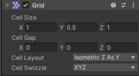 | Cell Size：网格单元格的大小Cell Gap：网格之间的间隔大小Cell Layout：网格单元的形状和排列 Rectangle：矩形 Hexagon：六边形 Isometric：等距布局，单元格为菱形 Isometric Z as Y：等距布局，但Unity将单元格Z轴转换为局部Y坐标 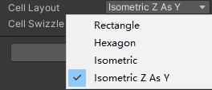 |
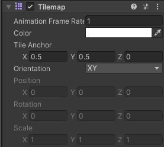 | Animation Frame Rate：Unity播放瓦片动画的速率。相当于倍速Color：瓦片色调颜色Tile Anchor：瓦片的锚点偏移Orientation：瓦片地图上瓦片的方向。相当于2D平面使用的是Unity中的哪两个轴 | |
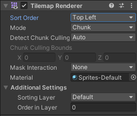 | Sort Order：设置 所选瓦片地图上的瓦片排序方向Mode：渲染器的渲染模式 \tChunk：按位置对瓦片进行分组，并将瓦片精灵一起批处理进行渲染，性能较好 \tIndividual：单独渲染每个瓦片，会考虑他们的位置和排序顺序。会让瓦片精灵和场景中其它渲染器或自定义排序轴进行交互Chunk Culling Bounds：当选择手动设置剔除拓展边界时，可以在这里自己填写拓展的值 |
为挂载TilemapRenerer脚本的对象添加Tilemap Collider2D脚本
会自动添加碰撞器
注意：想要生成碰撞器的瓦片Collider Type类型要进行设置练习题
01 请用TileMap制作，一个横版通关的地图，让一个角色可以在其中移动
using System.Collections;
using System.Collections.Generic;
using UnityEngine;
public class PlayerObjectLesson24 : MonoBehaviour
{
public float moveSpeed = 3;
private SpriteRenderer sr;
private Rigidbody2D rigidBody2D;
private float h;
// Start is called before the first frame update
void Start()
{
rigidBody2D = this.GetComponent<Rigidbody2D>();
sr = this.GetComponent<SpriteRenderer>();
}
// Update is called once per frame
void Update()
{
//左右移动
h = Input.GetAxis("Horizontal");
rigidBody2D.velocity = new Vector2(h * moveSpeed, rigidBody2D.velocity.y);
//人物面朝向改变
if (h < 0)
sr.flipX = true;
else if (h > 0)
sr.flipX = false;
//跳跃
if (Input.GetKeyDown(KeyCode.Space))
{
rigidBody2D.AddForce(Vector2.up * 300);
}
}
}02 请用TileMap制作，一个有伪Z轴的地图，让一个角色可以在其中移动
1.等距瓦片地图的两项重要设置
2.两种等距瓦片地图的区别
3.等距瓦片地图的排序问题
3-1:轴心点排序
3-2:排序层排序（推荐）
4.等距瓦片地图角色不使用重力
5.等距瓦片碰撞器建议使用格子形状
6.等距瓦片地图上跳跃问题using System.Collections;
using System.Collections.Generic;
using UnityEngine;
public class PlayerObjectLesson24_2 : MonoBehaviour
{
public float moveSpeed = 3;
private float h;
private float v;
public SpriteRenderer sr;
// Start is called before the first frame update
void Start()
{
}
// Update is called once per frame
void Update()
{
h = Input.GetAxis("Horizontal");
v = Input.GetAxis("Vertical");
//水平方向移动
this.transform.Translate(Vector3.right * moveSpeed * Time.deltaTime * h);
//竖直方向的移动
this.transform.Translate(Vector3.up * moveSpeed * Time.deltaTime * v);
//翻转相关
if (h < 0)
sr.flipX = true;
else if (h > 0)
sr.flipX = false;
}
}04- 官方拓展包导入
知识点一 下载官方拓展包 https://github.com/Unity-Technologies/2d-extras
知识点二 导入官方拓展包 解压后直接拖入到Assets文件夹中即可
知识点三 了解官方拓展包为Tilemap添加了什么
拓展包为Tilemap添加新的瓦片类型和笔刷类型 帮助我们更加方便的编辑2D场景05- 官方拓展包 — 新增瓦片类型
知识点一 规则瓦片 RuleTile
定义不同方向是否存在连接图片的规则，让我们更加快捷的进行地图编辑
| 规则瓦片 Rule Tile (Hexagonal、Isometric) 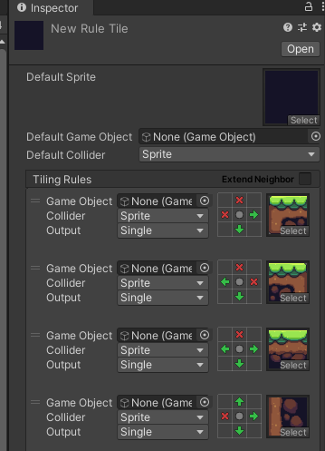 | Default Sprite：默认图片 Default GameObject ：默认游戏对象 Default Collider：默认碰撞器规则 Tiling Rules：平铺规则 可以自己添加删除 |
知识点二 动画瓦片 AnimatedTile，可以指定序列帧，产生可以播放序列帧动画的瓦片
| 动画瓦片 Animated Tile 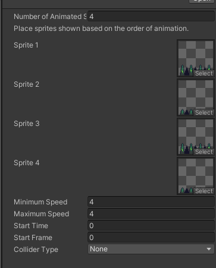 | Number Of Animated Sprites：动画有多少张图构成 Minimum Speed：最小播放速度 Maximum Speed：最大播放速度 Start Time：开始播放的时间 Strat Frame：从那一帧开始播放 |
知识点三 管道瓦片 PipelineTile，根据自己相邻瓦片的数量更换显示的图片
| 管道瓦片 Pipeline Tile 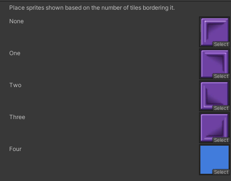 | None：一个都不相邻时使用的图片 One——Four：相邻1~4个时使用的图片 |
知识点四 随机瓦片 RandomTile，根据你设置的图片，随机从中选一个进行绘制
| 随机瓦片 Random Tile 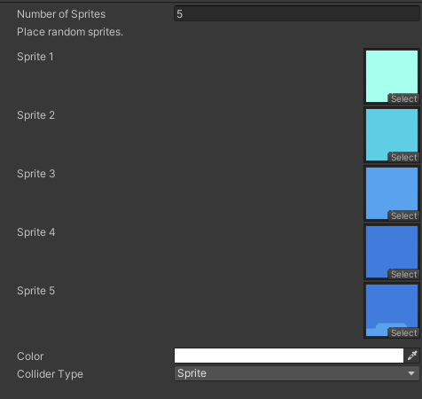 | Number Of Sprites：随机图片数量（之后会随机取一个图片来使用） |
知识点五 地形瓦片 TerrainTile，有点类似规则瓦片，只不过地形瓦片是帮助你定好的规则
| 地形瓦片 TerrainTile 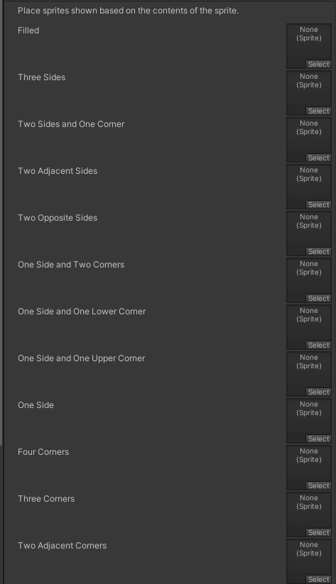 | Filled:填满 Three Sides:三个面 Two Sides and One Corner:两面一角 Two Adjacent Sides:相邻两侧 Two Opposite Sides:两个相对的侧面 One Side and Two Corners:一侧和两个角 One Side and One Upper Corner:一边和上角 One Side:一面 Four Corners:四个角 Three Corners:三个角 Two Adjacent Corners:两个相邻角 Two Opposite Corners：两个相反的角 One Corner：一个角 Empty：空 |
知识点六 权重随机瓦片 WeightedRandomTile，可以不平均随机选择图片的瓦片
知识点七 (高级)规则覆盖瓦片 (Advanced)Rule Override Tile，
在规则瓦片的基础上 改变图片或者指定启用的规则
06- 官方拓展包 — 新增笔刷类型
1.预设体笔刷——用于快捷刷出想要创建的精灵
2.预设体随机笔刷——用于快捷随机刷出想要创建的精灵
3.随机笔刷——可以指定瓦片进行关联，随机刷出对应瓦片1. Coordinate Brush 坐标笔刷 —— 可以实时看到格子坐标
2. GameObject Brush 游戏对象笔刷 —— 可以在场景中选择和擦除游戏对象仅限于选定的游戏对象的子级
3. Group Brush 组合笔刷 —— 可以设置参数 当点击一个瓦片样式时 会自动取出一个范围内的瓦片
4. Line Brush 线性笔刷 —— 决定起点和终点画一条线出来
5. Random Brush 随机笔刷 —— 和之前的自定义随机画笔类似，可以随机画出瓦片
6. Tint Brush 着色笔刷 —— 可以给瓦片着色 瓦片的颜色锁要开启（Inspector窗口切换Debug模式
修改Flags）
7. Tint Brush(Smooth) 光滑着色笔刷 —— 可以给瓦片进行渐变着色，需要按要求改变材质07- 代码控制相关
Tilemap组件：用于管理瓦片地图
TileBase组件：瓦片资源对象基类
Grid组件：用于坐标转换1.清空瓦片地图
map.ClearAllTiles();
2.获取指定坐标格子
TileBase tmp = map.GetTile(Vector3Int.zero);
print(tmp);
3.设置删除瓦片
map.SetTile(new Vector3Int(0, 2, 0), tileBase);//设置对应位置的瓦片
map.SetTile(new Vector3Int(1, 0, 0), null);//设置对应位置的万片 为 空，就是直接删掉
map.SetTiles()
4.替换瓦片
map.SwapTile(tmp, tileBase); 替换整个场景中同一类型的图片（类似PS中智能对象替换）
5.世界坐标转格子坐标
屏幕坐标转世界坐标
世界坐标转格子坐标
传入的参数是世界坐标
grid.WorldToCell()3- 动画基础
01- Animation 动画窗口
01Animation动画窗口
识点一 打开Animation窗口
Window——>Animation——>Animation
知识点二 Animation窗口是用来干啥的
Animation窗口 直译就是动画窗口
它主要用于在Unity内部创建和修改动画
所有在场景中的对象都可以通过Animation窗口为其制作动画
原理：
制作动画时：记录在固定时间点对象挂载的脚本的变量变化
播放动画时：将制作动画时记录的数据在固定时间点进行改变，产生动画效果
知识点三 关键词说明
动画时间轴：
每一个动画文件都有自己的一个生命周期，从动画开始到结束
我们可以在动画时间轴上编辑每一个动画生命周期中变化
动画中的帧：
假设某个动画的帧率为60帧每秒，意味着该动画1秒钟最多会有60次改变机会
每一帧的间隔时间是 1s/60 ≈ 16.67毫秒
也就是说 我们最快可以每16.67毫秒改变一次对象状态
关键帧：
动画在时间轴上的某一个时间节点上处于的状态
知识点四 认识Animation窗口功能02 创建编辑Animation动画 知识点
1.在场景中选中想要创建动画的对象
2.在Animation窗口中点击创建
3.选择动画文件将要保存到的位置
保存动画文件时，Unity会帮助我们完成以下操作
1.创建一个 Animator Controller（动画控制器或称之为动画状态机） 资源（新动画系统）
2.将新创建的动画文件添加到Animator Controller中
3.为动画对象添加Animator组件
4.为Animator组件关联创建的Animator Controller文件03 代码控制动画-老动画系统-不使用
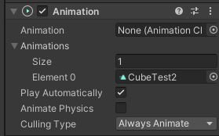 | 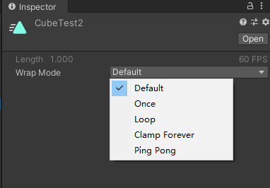 | |
| Animation：默认播放的动画 Animations：该动画组件可以控制的所有动画 Play AutoMatically：是否一开始就自动播放默认动画 Animate Physics：动画是否与物理交互 Culling Type：决定什么时候不播放动画 \tAlways Animate：始终播放 \tBased On Renderers：基于默认动画姿势剔除 | Default：读取设置得更高的默认重复模式 Once：播放一次就停止 Loop：从头到尾不停循环播放 PingPong：从头到尾从尾到头不停播放 ClampForever：播放结束会停在最后一帧，并且会一直播放最后一帧（相当于状态不停止），表现效果和Once一样，但是逻辑处理上不同 |
知识点一 什么是老动画系统
Unity中有两套动画系统
新：Mecanim动画系统——主要用Animator组件控制动画
老：Animation动画系统——主要用Animation组件控制动画（Unity4之前的版本可能会用到）
目前我们为对象在Animation窗口创建的动画都会被新动画系统支配
有特殊需求或者针对一些简易动画，才会使用老动画系统
知识点二 老动画系统控制动画播放
注意：
在创建动画之前为对象添加Animation组件之后再制作动画
这时制作出的动画和之前的动画格式是有区别的
Animation参数
知识点三 代码控制播放
animation = this.GetComponent<Animation>();
1.播放动画
2.淡入播放,自动产生过渡效果
3.前一个播完再播放下一个
4.停止播放所有动画
5.是否在播放某个动画
6.播放模式设置
7.其它（了解即可，新动画系统中会详细讲解）
层级和权重以及混合（老动画系统需要通过代码来达到动画的遮罩、融合等效果）
设置层级
设置权重
混合模式 叠加还是混合
设置混组相关骨骼信息
知识点四 动画事件
动画事件主要用于处理 当动画播放到某一时刻想要触发某些逻辑
比如进行伤害检测、发射子弹、特效播放等等
总结
老动画系统主要用于处理老版本项目和简单的一些自制动画
新项目都不建议大家使用了
关键组件：Animation
}
public void AnimationEvent()
{
print("动画事件触发");
}
// Update is called once per frame
void Update()
{
1.播放动画
if(Input.GetKeyDown(KeyCode.Alpha1))
{
animation.Play("1");
}
if (Input.GetKeyDown(KeyCode.Alpha2))
{
animation.Play("2");
}
2.淡入播放,自动产生过渡效果
if(Input.GetKeyDown(KeyCode.Alpha3))
{
当你要播放的动画的开始状态 和当前的状态 不一样时
就会产生过渡效果
animation.CrossFade("3");
animation.Play("3");
}
3.前一个播完再播放下一个
if( Input.GetKeyDown(KeyCode.Alpha4) )
{
animation.PlayQueued("2");
animation.CrossFadeQueued("2");
}
4.停止播放所有动画
animation.Stop();
5.是否在播放某个动画
if( animation.IsPlaying("1") )
{
}
6.播放模式设置
animation.wrapMode = WrapMode.Loop;
7.其它（了解即可，新动画系统中会详细讲解）
层级和权重以及混合（老动画系统需要通过代码来达到动画的遮罩、融合等效果）
设置层级
animation["1"].layer = 1;
设置权重
animation["1"].weight = 1;
混合模式 叠加还是混合
animation["1"].blendMode = AnimationBlendMode.Additive;
设置混组相关骨骼信息
animation[""].AddMixingTransform();
}练习题
使用Animation相关知识，请自己用Unity自带几何体拼凑一个机器人，有手有脚
为它制作两个动作，一个待机动作（站立不动），一个走路动作，我们可以通过键盘控制它移动切换动作
using System.Collections;
using System.Collections.Generic;
using UnityEngine;
public class Lesson31_Exercises : MonoBehaviour
{
private Animation animation;
private bool isMoving;
void Start()
{
animation = this.GetComponent<Animation>();
}
void Update()
{
if( Input.GetKeyDown(KeyCode.W) )
{
animation.CrossFade("Move");
isMoving = true;
}
else if(Input.GetKeyUp(KeyCode.W))
{
animation.CrossFade("Idle");
isMoving = false;
}
if (isMoving)
this.transform.Translate(Vector3.forward * 5 * Time.deltaTime);
}
}02- Animator 动画状态机-新动画系统-使用这个
目前 spine 已经支持用 Animator 进行控制。优先用 Animator 控制
01: 有限状态机概念 知识点
有限状态机（Finite - state machine, FSM）
又称有限状态自动机，简称状态机
是表示有限个状态以及在这些状态之间的转移和动作等行为的数学模型
有限：表示是有限度的不是无限的
状态：指所拥有的所有状态
举例说明：
假设我们人会做很多个动作，也就是有很多种状态
这些状态包括 站立、走路、跑步、攻击、防守、睡觉等等
我们每天都会在这些状态中切换，而且这些状态虽然多但是是有限的
当达到某种条件时，我们就会在这些状态中进行切换
而且这种切换时随时可能发生的游戏开发中有很多功能系统都是有限状态机
最典型的状态机系统
动作系统 —— 当满足某个条件切换一个动作，且动作是有限的
AI（人工智能）系统 —— 当满足某个条件切换一个状态，且状态时有限的
所以状态机是游戏开发中一个必不可少的概念最简单的状态机实现代码就是基于switch的实现
假设我们只有一个值来控制当前玩家的状态
string animName = "idle";
switch (animName)
{
case "idle":
待机动作逻辑
break;
case "move":
移动动作逻辑
break;
case "run":
跑步动作逻辑
break;
case "atk":
攻击动作逻辑
break;
}游戏开发中某些系统中存在有限种状态的切换变化时
我们可以使用有限状态机的设计思路来进行逻辑编写02 : Animator Controller动画控制器（状态机） 知识点
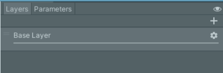 | Layers：动画层级页签，为动画添加更多的层级，层级高的动画播放会愛盖层级低的Parameters：參数页签，为动画状态机添加控制状态切换的參数眼睛图标：显隐左侧面 | |
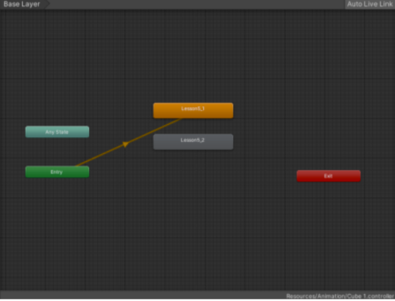 | 网格化布局区域：主要用于编辑状态之前的切换关系1.窗口中的每一个矩形表示一个状态2.蜜口中的每一个箭头表示一个切换条件矩形说明：默认三大矩形：绿色Entry矩形：进入状态机流程红色Exit矩形：退出状态机流程Any State：任意状态，代表状态机中的任意状态人为漆加矩形：橙色矩形：一开始的默认状态动画，和Entry相连表示一开始播放的动画灰色矩形：自己添加的某一种动作状态 |
知识点一 创建动画状态机
1.通过为场景中物体创建动画时自动创建
2.手动创建动画状态机文件
知识点二 基础使用——初识动画状态机窗口
知识点三 基础使用——添加动画
1.自动添加——为对象创建动画后会自动将动画添加到状态机中
2.手动添加1——将动画文件拖入到状态机中（注意：老动画拖入会有警告）
3.手动添加2——右键创建状态，再关联动画
知识点四 基础使用——添加切换连线
知识点五 基础使用——添加切换条件
在左侧面板点击参数页签
可以在这里添加4中类型的切换条件
知识点六 基础使用——设置动画间切换条件03 : 新动画系统代码控制动画状态机切换 知识点
Controller: 对应的动画控制器（状态机）
Avatar: 对应的替身配置信息（之后讲解 3D 模型时详细讲解）
Apply Root Motion: 是否启用动画位移更新
UpdateMode: 更新模式（一般不修改它）
Normal: 正常更新
Animate Physics: 物理更新
Unscaled Time: 不受时间缩放影响
Culling Mode: 裁剪剔除模式
Always Animate: 始终播放动画，即使在屏幕外也不剔除
Cull Update Transforms: 摄像机没有渲染该物体时，停止位置、IK 的写入
Cull Completely: 摄像机没有渲染物体时，整个动画被完全禁用知识点一 关键组件Animator
参数相关
知识点二 Animator中的API
我们用代码控制状态机切换主要使用的就是Animator提供给我们的API
我们知道一共有四种切换条件 int float bool trigger（只要点击就触发）
所以对应的API也是和这四种类型有关系的
Private Animator animator;
animator = this.GetComponent<Animator>();
1.通过状态机条件切换动画
animator.SetFloat("条件名", 1.2f);//设置当前条件的名字 和 值
animator.SetInteger("条件名", 5);
animator.SetBool("条件名", true);
animator.SetTrigger("条件名");
animator.GetFloat("条件名");//得到这个条件当前的值
animator.GetInteger("条件名");
animator.GetBool("条件名");
2.直接切换动画 除非特殊情况 不然一般不使用
animator.Play("状态名");
void Update()
{
if( Input.GetKeyDown(KeyCode.A) )
{
animator.SetBool("change", true);
}
if(Input.GetKeyDown(KeyCode.S))
{
animator.SetBool("change", false);
}
}has exit time 取消勾选 ，才能操作没有延迟（不然会等动画播完后再执行）
Animator 练习题
练习题
使用Animator相关知识
请自己用Unity自带几何体拼凑一个机器人，有手有脚
为它制作两个动作，一个待机动作（站立不动），一个走路动作
我们可以通过键盘控制它移动切换动作
public class Lesson34_Exercises : MonoBehaviour
{
private Animator animator;
// Start is called before the first frame update
void Start()
{
animator = this.GetComponent<Animator>();
}
// Update is called once per frame
void Update()
{
if (Input.GetKeyDown(KeyCode.W))
animator.SetBool("isMoving", true);
else if (Input.GetKeyUp(KeyCode.W))
animator.SetBool("isMoving", false);
if( animator.GetBool("isMoving") )
{
this.transform.Translate(Vector3.forward * 5 * Time.deltaTime);
}
}
}4- 2D 动画
01- 序列帧动画
我们最常见的序列帧动画就是我们看的 日本动画片
以固定时间间隔 按序列切换图片 就是 序列帧动画的本质
当固定时间间隔足够短时 我们肉眼就会认为图片是连续动态的 进而形成动画（会动的画面）
它的本质和游戏的帧率概念有点类似
原理就是在一个循环中按一定时间间隔不停的切换显示的图片public class Lesson35 : MonoBehaviour
{
public Sprite[] sprs;
private SpriteRenderer sr;
private float time = 0;
private int nowIndex = 0;
public Animator animator;
void Start()
{
知识点二 代码制作序列帧动画
我们先尝试用原理 通过代码来实现序列帧动画
sr = this.GetComponent<SpriteRenderer>();
sr.sprite = sprs[nowIndex];
知识点三 Animation窗口制作序列帧动画
方法一：
1.创建一个空物体
2.创建一个动画
3.直接将某一个动作的序列帧拖入窗口中
方法二：
直接将图片拖入Hierarchy层级窗口中
注意：需要修改动画帧率 来控制动画的播放速度
知识点四 利用Animator进行动画控制
}
void Update()
{
每一次增加帧间隔时间
time += Time.deltaTime;
当帧间隔时间达到某一个条件时 就切换图片
if( time >= 0.03f )
{
索引增加 切换图片
nowIndex++;
如果显示到最后一张了 从头显示
if (nowIndex >= sprs.Length)
nowIndex = 0;
sr.sprite = sprs[nowIndex];
time = 0;
}
if (Input.GetKeyDown(KeyCode.Space))
animator.SetBool("isDown", true);
else if (Input.GetKeyUp(KeyCode.Space))
animator.SetBool("isDown", false);
}
}02-骨骼动画——2D Animation
01 单张图片骨骼编辑
精灵图片所在的目录旁有一个 .meta 结尾的文件存放骨骼信息，删除后骨骼绑定丢失。
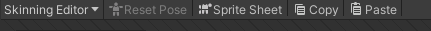 | |
| Reset Pose 将角色骨骼和关节恢复到原始位置Sprite Sheet： 图集显示 Copy 复制当前选择的数据 Paste 粘贴复制数据 |
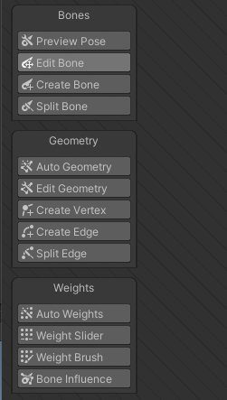 | Bone 骨骼相关Preview Pose 预览模式，可以预览动作并不会真正的改变设置Edit Bone 编辑骨骼，可以改变骨骼的位置、长度、方向、名称等等Create Bone 创建骨骼Split Bone 拆分骨骼，将一个骨骼一分为二Geometry 蒙皮相关 蒙皮决定了骨骼主要控制哪一部分Auto Geometry 自动蒙皮OUtline Detail 边缘细节，值越大，轮廓越细致Alpha Tolerance 阿尔法公差值，控制蒙皮细节Subdivide 细化程度，控制蒙皮细节Weights 是否自动设置权重，一般勾选Edit Geometry 编辑蒙皮Create Vertex 创建顶点Create Edge 创建边线Split Edge 拆分边，用一个新的顶点分离一个边-------------------------------------Weights 权重相关 决定了当骨骼动时如何印象顶点和边Auto Weights 自动赋予权重Weight Slider 编辑顶点和边的权重Mode：计算模式 Add And Subtract：加减法 Grow And Shrink：增长和收缩 Smooth：平滑Bone：设置权重的骨骼Normalize：标准化设置Amount：数量级Vertex Weight：顶点权重 对应的骨骼Weight Brush 用笔刷赋予权重Size：笔刷大小Hardness：笔刷强度，越大效果越明显Step：步数Bone Influence 选择骨骼用的Sprite主要用于在psb图片中使用 骨骼控制点的图片关联 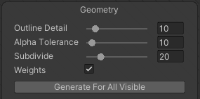 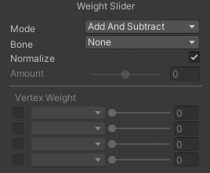 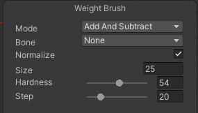 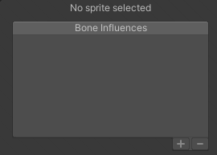 |
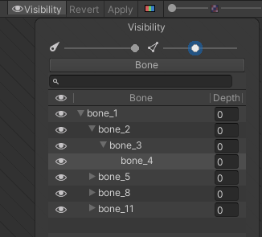 | Visibility 切换选定精灵或骨骼的可见性左侧拖动条 控制编辑时骨骼透明度右侧拖动条 控制编辑时权重透明度下方列表 浏览各骨骼名和骨骼层级信息 |
add component-> Sprite Skin->Create Bones 创建骨骼
知识点一 什么是2D骨骼动画
首先回顾一下序列帧动画
传统的序列帧动画为了达到好的动画效果
理论上来说，图片越多，动作越流畅
往往需要较多的美术资源，虽然效果好但是资源占用较多
而2D骨骼动画是利用3D骨骼动画的制作原理进行制作的
将一张2D图片分割成n个部位，为每个部位绑上骨骼，控制骨骼旋转移动
达到用最少的2D美术资源做出流畅的2D动画效果
知识点二 Unity中如何制作2D骨骼动画
主要方式有两种
1.使用Unity2018新加功能 2D Animation 工具制作
2.使用跨平台骨骼动画制作工具 Spine 制作
知识点三 导入2D Animation工具
在Package Manager窗口 搜索 2D Animation并安装
知识点四 面板讲解
导入工具后 在Sprite Editor窗口会多一个选项 Skinning Editor
知识点五 骨骼动画使用02 图集图片骨骼编辑
如果物体感觉大了，可以缩放摄像机视口范围，让物体变小 Camera 下的 Size 调大
知识点一 注意事项
1.设置Sprite为图集模式
2.对图集图片进行切片
3.
知识点二 图集骨骼编辑
知识点三 图集骨骼动画使用03 psb图片骨骼编辑
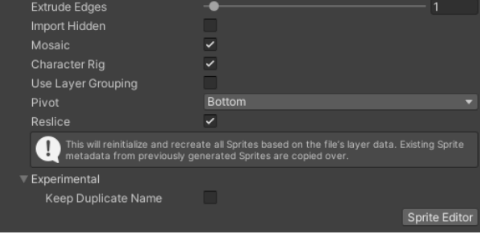 | |
| Extrude Edges: 图片边缘延伸网格 Import Hidden: 是否导入 psb 文件中隐藏的图层 Moszic: 启用后，将图层生成 Sprite，并将他们合并成单个纹理 Character Rig: 是否使用人物已经绑定的骨骼 Use Layer Grouping: 使用 psb 文件中的层分组 Pivot: 轴心点位置 Reslice: 从导入层重新生成 Sprite，并清除对 Sprite 的任何更改，只有启用 Moszic 后又用 Keep Duplicate Name: 让 Sprite 名称保留 PSB 文件中的名字 |
知识点一 认识PSB文件
认识PSB之前先认识PS
PS（photoshop）是一款强大的图像处理软件
在各领域都被广泛使用
在游戏行业中也是美术同学使用最多的图像处理软件之一
PSD和PSB两种格式，都是PS这款软件用于保存图像处理数据的文件格式
PSD和PSB两种格式并没有太大的区别
最大的区别是PSD格式兼容除PS以外的其它一些软件
而PSB只能用PS打开
在Unity中官方建议使用psb格式
知识点二 在Unity中使用PSB文件
需要在Packages Manager窗口中引入 2D PSD Importer工具包
知识点三 设置PSB文件关键参数
知识点四 为PSB文件编辑骨骼信息
知识点五 为PSB文件制作骨骼动画04 反向动力学IK
正向动力学时通过父对象改变子对象，反向动力学是通过子对象改变父对象
LImb 用于身体使用 CCD 模式 不能从左到右 进行顺滑的反向，会直 接左跳到右的感觉
知识点一 什么是IK？
在骨骼动画中，构建骨骼的方法被称为正向动力学
它的表现形式是，子骨骼（关节）的位置根据父骨骼（关节）的旋转而改变
用我们人体举例子
当我们抬起手臂时，是肩部关节带动的整个手臂的运动，用父子骨骼理解的话就是父带动了子
而IK全称是Inverse Kinematics，翻译过来的意思就是反向动力学的意思
它和正向动力学恰恰相反
它的表现形式是，子骨骼（关节）末端的位置改变会带动自己以及自己的父骨骼（关节）旋转
用我们人体举例子
当我们拿起一个杯子的时候是用手掌去拿，以杯子为参照物，我们移动杯子的位置，手臂会随着杯子一起移动
用父子骨骼理解的话就是子带动了父
知识点二 2D IK包引入
在Package Manager窗口中引入2D IK工具包
需要在Advanced高级选项中选中Show preview packages（显示预览包）
这样才能看到2D IK相关内容
注意：如果在引入包时报错，需要在Windows防火墙中添加入站规则
知识点三 2D IK的使用
知识点四 IK对于我们的意义
1.瞄准功能
2.头部朝向功能
3.拾取物品功能
等等有指向性的功能时 我们都可以通过IK来达到目的
最大的作用，可以方便我们进行动画制作练习题
实现，我鼠标 指向哪里，人物的手指向哪里（就是设置 IK 点和 鼠标指向点位置相同）
要处理鼠标点转世界坐标位置，然后把 IK 点移动到对应的世界坐标位置
世界坐标是 3 维的 ，相机在三维空间横切出近裁剪平面，屏幕坐标就是将该平面上的投影成像换算得到的二维像素。
public class Lesson39_Exercises : MonoBehaviour
{
public Transform ikPoint;
private float z;
private Vector3 mousePos;
void Start()
{
//这里是为了得到当前2D游戏所在平面的 横截面z轴坐标 用于之后的 屏幕坐标转世界坐标
z = Camera.main.WorldToScreenPoint(ikPoint.position).z;
// Camera.main.WorldToScreenPoint()把一个3 维世界坐标点投影到相机的近裁剪平面
}
// Update is called once per frame
void Update()
{
if ( Input.GetMouseButton(0) )
{
//得到当前鼠标所在位置
mousePos = Input.mousePosition;
//改变z轴 为了之后转换世界坐标后 横截面位置的正确
mousePos.z = z;
ikPoint.position = Camera.main.ScreenToWorldPoint(mousePos);
}
}
}05 换装——在同一个文件中的换装资源
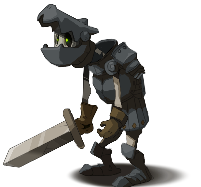
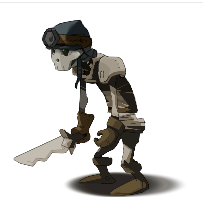
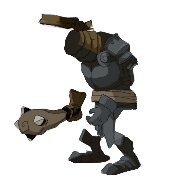
1.在ps中制作美术资源时，将一个游戏对象的所有换装资源都摆放好位置
2.当我们导入该资源时，要注意是否导入隐藏的图层注意事项：
每个部位 关联的骨骼要明确设置
为同一个部位的不同装备分组两个关键组件
SpriteLibrary——精灵资料库，确定类别分组信息
SpriteResolver——精灵解算器，用于确定部位类别和使用的图片
一个数据文件
SpriteLibraryAsset——精灵资料库资源，具体记录类别分组信息的文件1.获取各部位的SpriteResolver（需要引用命名空间）
2.使用SpriteResolver的API进行装备切换
public class Lesson40 : MonoBehaviour
{
public SpriteResolver sr;
//这是声明一个 SpriteResolver 类型的引用变量，sr 里存储的就是目标组件的内存地址（引用），
//sr 本身就代表了这个组件实例，可以直接调用它的所有方法和属性。
void Start()
{
//GetCategory() 获取当前部位默认的类别名
// SetCategoryAndLabel 设置当前部位想要切换的图片信息
r.SetCategoryAndLabel(sr.GetCategory(), "CASK 1");
//进行换装，传入 当前部位的类别， 改类别下对应物品的名字
}
}//2D骨骼动画多部位换装脚本，依赖Unity 2D Animation包
public class Lesson40 : MonoBehaviour
{
//换装部位缓存字典：key=部位分类名，value=对应部位的SpriteResolver组件
private Dictionary<string, SpriteResolver> equipDic = new Dictionary<string, SpriteResolver>();
void Start()
{
//获取自身+所有子物体上的SpriteResolver（全部可换装部位）
SpriteResolver[] srs = this.GetComponentsInChildren<SpriteResolver>();
//遍历存入字典，后续换装可直接按名称查找，无需重复遍历
for(int i = 0; i < srs.Length; i++)
{
equipDic.Add(srs[i].GetCategory(), srs[i]);
}
//启动时测试换装：将Cask部位切换为CASK 1样式
ChangeEquip("Cask", "CASK 1");
}
//对外换装接口
//category：部位分类（对应Sprite Library的Category）
//equipName：目标装备标签（对应Sprite Library的Label）
public void ChangeEquip(string category, string equipName)
{
//先判断部位是否存在，防止空引用报错
if(equipDic.ContainsKey(category))
{
//调用SpriteResolver原生API，切换对应精灵
equipDic[category].SetCategoryAndLabel(category, equipName);
//equipDic[category] 返回的是 SpriteResolver 组件引用本身
}
}
}public class Lesson41 : MonoBehaviour
{
void Start()
{
#region 知识点一 如何在不同psb文件中制作换装资源
//1.保证个部位在PS文件中的统一
//2.基础部位可选择性隐藏
#endregion
#region 知识点二 编辑换装资源的骨骼信息
//注意事项：
//不同文件的骨骼信息必须统一,所以我们直接使用复制的方式
#endregion
#region 知识点三 手动添加关键组件和数据文件
//1.首先创建SpriteLibraryAsset数据文件
//2.为跟对象添加SpriteLibrary并关联数据文件
//3.为换装部位关联SpriteResolver
#endregion
#region 总结 如何选择 同一文件和 不同文件 制作换装资源两种方案
//换装较少的游戏 比如只有面部表情更换 可以使用同一psb文件方案
//换装较多的游戏 比如各部位有n种装备 可以使用不同psb文件方案
//不同psb文件 拓展性更强
//一切根据需求而定
}
}03 骨骼动画——Spine
01: Spine——运行库导入
知识点一 Spine是什么？
Spine是一个收费的跨平台的2D骨骼动画制作工具
它支持Unity，UE，Cocos2D，Cocos2D-x等等游戏引擎
相对Unity2018才推出的 2D Animation
Spine是目前商业游戏中较为常用的骨骼动画制作方案 稳定且高效
官方地址：http://zh.esotericsoftware.com/
知识点二 如何学习Spine
制作骨骼动画时美术人员的工作
除非你是要做独立游戏，美术程序一人包
那么我们没有必要去学习如何通过Spine制作骨骼动画
我们只需要学习如何在Unity中通过程序使用Spine制作的资源
如果想要学习如何制作Spine骨骼动画，可以根据官网提供的教学内容进行学习
知识点三 导入Unity使用的Spine运行库
有了Spine提供的支持Unity开发的运行库
我们才能在Unity中使用Spine制作的骨骼动画
你可以简单理解其实就是官方写好的识别文件处理文件呈现效果的代码
我们只需要学习如何使用它提供的API即可02: Spine——骨骼动画文件的使用
知识点一 Spine导出的Unity资源
Spine导出的资源有3个文件
.json 存储了骨骼信息
.png 使用的图片图集
.atlas.txt 图片在图集中的位置信息
当我们把这三个资源导入到已经引入了Spine运行库的Unity工程后
会自动为我们生成
_Atlas 材质和.atlas.txt文件的引用配置文件
_Material 材质文件
_SkeletonData json和_Atlas资源的引用配置文件
知识点二 使用Spine导出的骨骼动画
1.直接将_SkeletonData文件 拖入到场景中
选择创建 SkeletonAnimation对象
2.创建空对象 然后手动添加脚本进行关联03: Spine——骨骼动画参数相关
| 骨骼数据文件 | ||
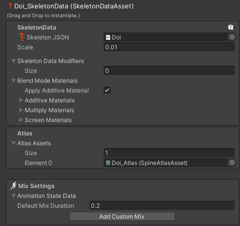 | SkeletonData JSON:骨骼数据文件Scale：缩放大小Skeleton Data Modifiers：骨骼数据修改器Blend Mode Materizls：混合模式材质Apply Additive Material：是否使用叠加材质Additive Materials：叠加材质Multiply Materials：相乘材质Screen Materials：屏幕材质Atlas Assets：图集资源Mix Settings：混合设置Animation State Data：动画状态数据 Default Mix Duration：默认混合持续时间Add Custom Mix：添加自定义混合（可以指定某两个动画之间的持续时间） | |
| Preview：预览 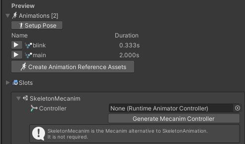 | Animations：动画Setup Pose：设置姿势（还原到默认姿势）Create Animation Reference Assets：创建动画参考资源Slots：插槽相关（一个部位有多张图片构成，可以在这预览）SkeletonMecanim：骨骼机制 Controller：关联动画控制器 SkeletonMecanim是SkeletonAnimation的替代品，它不是必须的 | |
| Skin：蒙皮选择 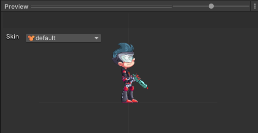 | ||
| 脚本组件 | ||
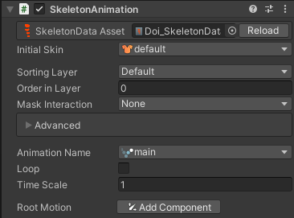 | SkeletonData Asset： 关联的骨骼动画信息Animation Name： 当前播放的动画名Loop： 是否循环Initial Skin： 初始蒙皮 美术在制作时可能有几套蒙皮 一般情况下只有一套 不需要修改Time Scale： 时间缩放，值越大动画播放的越快Root Motion： 是否添加根运动的脚本 一般情况下不添加 | |
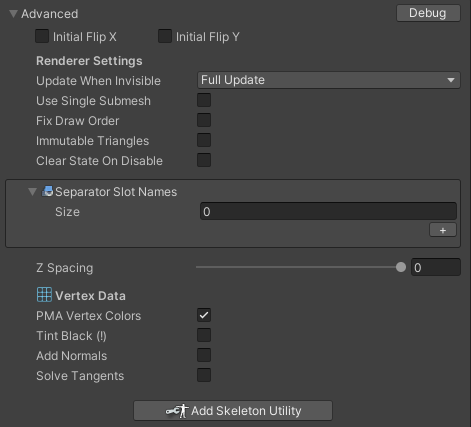 | Initial Flip X/Y：初始翻转X和YUpdate When Invisible：不可见时是否更新Nothing：不更新 Only Animation Status：仅动画状态 Only Event Timelines：仅事件 Everything Except Mesh：除了网格其它都更新 Full Update：更新所有Use Single Submesh：使用单个子网格Fix Draw Order：固定提取顺序Immutable Triangles：不变三角形Clear State On Disable：禁用时清楚状态Separator Slot Names：分隔符插槽名称Z Spacing：Z间距Vertex Data：顶点数据PMA Vertex Colors：PMA顶点颜色Tint Black：淡黑色Add Normals：添加法线Solve Tangents：求解切线Add Skeleton Utility：添加骨骼公共程序 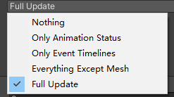 | |
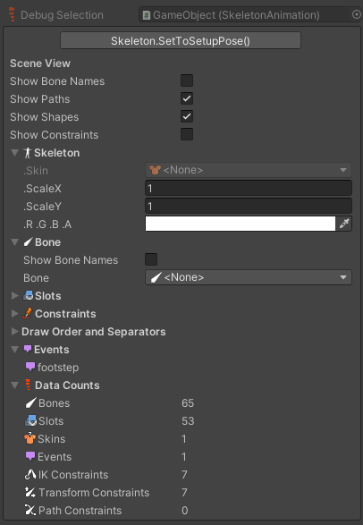 | Show Bone Names：显示骨骼名字Show Paths：显示路径Show Shapes：显示形状Show Constraints：显示约束条件ScaleX/Y：XY的缩放RGBA：颜色Bone：骨骼 Show Bone Names：显示骨骼名字Slots：插槽Constraints：约束条件Draw Order and Separators：提取顺序和分离器相关Events：事件Data Counts：数据数量Bones：骨骼数量Slots：插槽数量Skins：蒙皮数量Events：事件数量IK Constraints：IK约束数量Transform Constraints：位置约束数量Path Constraints：路径约束数量 |
知识点一 骨骼数据文件参数相关
知识点二 骨骼动画脚本参数相关04: Spine——骨骼动画代码相关
public class Lesson45 : MonoBehaviour
{
private SkeletonAnimation sa;
[SpineAnimation]
public string jumpName;
[SpineBone]
public string boneName;
[SpineSlot]
public string slotName;
[SpineAttachment]
public string attachmentName;
// Start is called before the first frame update
void Start()
{
sa = this.GetComponent<SkeletonAnimation>();
知识点一 动画播放
方法一：直接改变SkeletonAnimation中参数
sa.loop = true;
sa.AnimationName = "jump";
方法二：使用SkeletonAnimation中动画状态改变的函数
马上播放
sa.AnimationState.SetAnimation(0, jumpName, false);
排队播放
sa.AnimationState.AddAnimation(0, "walk", true, 0);
知识点二 转向
sa.skeleton.ScaleX = -1;
知识点三 动画事件
动画开始播放
sa.AnimationState.Start += (t) =>
{
print( sa.AnimationName + "动画开始播放");
};
动画被中断或者清除
sa.AnimationState.End += (t) =>
{
print(sa.AnimationName + "动画中断或者清除");
};
播放完成
sa.AnimationState.Complete += (t) =>
{
print(sa.AnimationName + "动画播放完成");
};
做动画时添加的自定义事件
sa.AnimationState.Event += (t, e) =>
{
print(sa.AnimationName + "自定义事件");
};
知识点四 便捷特性
动画特性
[SpineAnimation]
骨骼特性
[SpineBone]
插槽特性
[SpineSlot]
附件特性
[SpineAttachment]
知识点五 获取骨骼、设置插槽附件
获取骨骼
Bone b = sa.skeleton.FindBone(boneName);
sa.skeleton.SetAttachment(slotName, attachmentName);
知识点六 在UI中使用
SkeletonGraphic（UnityUI）
}5- 模型导入相关设置
01- 模型导入概述
知识点一 Unity中使用的模型
Unity支持很多模型格式
比如
.fbx
.dae
.3ds
.dxf
.obj等等
99%的模型都不是在Unity中制作的，都是美术人员在建模软件中制作
如 3DMax、Maya等等
当他们制作完模型后，虽然Unity支持很多模型格式
但是官方建议是将模型在建模软件中导出为FBX格式后再使用
使用FBX模型格式的优势
1.减少不必要数据，提升导入效率
2.不需要再每台计算机上安装建模软件的授权副本
3.对Unity版本无要求，使用原始3D模型格式可能会因为版本不同导致错误或意外
如果美术同学不知道如何导出FBX格式的模型和导出规范
可以参考Unity官网文档或者百度谷歌
美术同学在导出模型时需要注意
1.https://docs.unity.cn/cn/2019.4/Manual/CreatingDCCAssets.html
2.坐标轴，人物面朝向为Z轴正方向，Y轴正方向为头顶方向，X轴正方向为人物右侧
知识点二 导入模型的基本流程
1.美术同学用3D建模软件制作好模型导出FBX格式模型资源
2.程序将这些模型资源导入到Unity的资源文件夹中
3.在Unity内部对这些模型进行基础设置——模型、骨骼、动作、材质
知识点三 如何在Unity中设置模型相关内容
在Project窗口选中导入的模型
在Inspector窗口进行相关设置
4个页签分别是
1.Model 模型页签
2.Rig 操纵（骨骼）页签
3.Animation 动画页签
4.Materials 材质纹理页签
通过这4个页签对模型动作相关信息设置完成后
之后我们才能在场景中更好的使用这些模型资源02- Model 模型页签
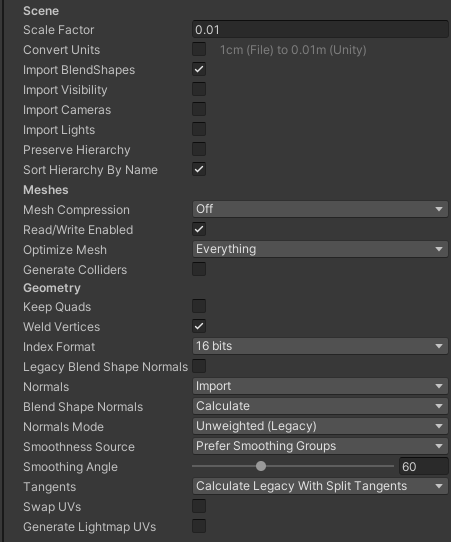 | Model 模型页签 | |
| Scene 场景相关设置 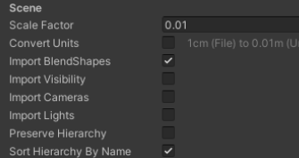 | Scene 场景相关设置Scale Factor 当模型中的比例不符合项目中的预期比例时 可以修改此值来改变该模型的全局比例 Unity的物理系统希望游戏世界中的1米在导入模型文件中为1个单位Convert Units 启用可将模型文件中定义的模型比例转换为Unity的比例 不同的格式的比例如下 .fbx .max .jas = 0.01 .3ds = 0.1 .mb .ma .lxo .dxf .blend .dae = 1Import BlendShapes 是否允许Unity随网格一起导入混合形状 当导入包含混合形状的网格时，将使用Skinned MeshRenderer组件 注意： 1.导入混合形状发现需要在FBX文件中具有平滑组 2.如果想要导入具有法线的混合形状 \t把下方的Blend Shape Normals属性设置为Import，将使用FBX文件的发现 \t或者 \t把下方的Blend Shape Normals属性设置为Calculate，Unity使用相同的逻辑来计算网格和混合形状上的法线Import Visibility 是否导入可见性 开启后可以从FBX文件中读取可见性属性。 比如模型动作里 有些动作是要隐藏模型形象的，开启后才会生效 一些3D建模软件对可见性属性不支持或者有限制 比如Maya和Blender就对可见性有限制 所以一般这个选项要根据你使用的建模软件决定 一般可以不勾选Import Cameras 是否导入摄像机 是否把FBX文件中的摄像机也导入，但是Unity支持FBX中摄像机的部分属性，比如正交或透视，是否支持动画，物理属性，远近裁剪面等等 一般不勾选Import Lights 是否导入光源 支持的光源类型 全局光、聚光灯、方向光、面光源 支持的光源属性 范围、颜色、强度、角度 一般不使用Preserve Hierarchy： 始终创建一个显示预制体根 通常在导入的时候，FBX会将模型中的空根节点进行优化去掉它 但是如果多个FBX文件中包含同一层级的空跟对象，可以勾选它来保留他们 主要作用是：比如有两个fbx文件，1包含骨骼和网格，2只包含骨骼动画。如果不启用它导入2，那么Unity将剥离根节点，会让层级不匹配让动画不能正常播放Sort Hierarchy By Name 在层级窗口中根据名字排序子物体 如果不启用，会保留FBX文件中定义的层级顺序 | |
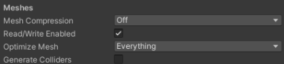 | Meshes 网格相关设置Mesh Compression 网格压缩 设置压缩比级减小网格的文件大小 提高压缩比会降低网格的精度 调整该参数可以优化游戏包的大小Off：不使用压缩Low：低压缩比Medium：中等压缩比High：高压缩比Read/Write Enabled 是否开启读写网格信息 如果开启，Unity将网格数据传给GPU后，在CPU中还会保留可寻址内存，意味着我们可以通过代码访问网格数据进行处理 如果不开启，Unity将网格数据传个GPU后，会将CPU中的可寻址内存中网格数据删除，我们无法再得到网格数据 开启时，会增加内存占用，关闭时，可以节约运行时内存使用量 何时开启？ 1.需要在代码中读取或写入网格数据 2.需要运行时合并网格 3.需要使用网格碰撞器时 4.需要运行时使用NavMesh构建组件来烘焙NavMesh时 等等Optimize Mesh 确定三角形在网格中列出的顺序以提高GPU性能Nothing：无优化Everything：对顶点以及多边形顶点索引进行重新排序Polygon Order：仅对多边形重新排序Vertex Order：仅对顶点重新排序Generate Colliders 生成碰撞器 启用后会自动附加网格碰撞器的情况下导入你的网格 建议不移动的环境几何体可以开启它，但是需要移动的几何体建议不要开启它 | |
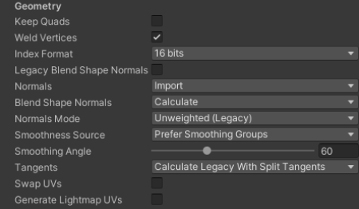 | Geometry 几何体相关设置Keep Quads 保留四边形 启用后，Unity不会将4个顶点的多边形转为三角形 当使用曲面细分着色器时可能需要启用此选项，因为四边形的曲面周色漆比多边形的效率更高 Unity 可以导入任意类型的多边形（三角形到 N 边形）。顶点数量超过四个的多边形将始终转换为三角形，无论此设置如何。 如果一个网格有四边形和三角形（或者转换为三角形的 N 边形），那么 Unity 会创建两个子网格来分离四边形和三角形。每个子网格要么只包含三角形，要么只包含四边形。Weld Vertices 合并在空间中共享相同位置的顶点，前提是这些顶点总体上共享相同的属性（UV，法线，切线等等） 开启后相当于会通过减少网格的总数量来优化网格的顶点计数 一般都开启，除非你想有意保留这些重复顶点，之后想通过代码去获取他们来进行处理Index Format 网格索引缓冲区的大小一般都选择16bits，Auto可以会默认选择16bits 只有在必要时使用32bit 16bits即通用又节约内存Legacy Blend Shape Normals 启用后会基于Smoothing Angle值来计算法线Normals 定义如何计算法线Import：从文件中导入法线，如果文件中不包含发现信息，将使用Calculate模式计算法线Calculate：根据Normals Mode、Smoothness Source和Smoothing Angle属性来计算发现None：不计算法线Blend Shape Normals 定义如何为混合形状计算法线 只有当Legacy Blend Shape Normals禁用时出现Normals Mode 计算法线的模式，只有当上方的Normals设置为Import和Calculate才会出现Unweighted Legacy：2017.1版本之前计算法线的方式，如果是在该版本之前导入的所有FBX模型，默认设置为该模式Unweighted：法线不加权重Area Weighted：法线按照图面面积加权重Angle Weighted：法线按照每个图面上的顶角加权重Area And Angle Weighted：法线按照每个图面上的图面面积和顶角加权重，这是默认选项Smoothness Source 如何确定平滑，哪些边应该平滑，哪些应该粗糙 只有当Legacy Blend Shape Normals 禁用时出现Prefer Smoothing Groups：尽可能使用模型文件中的平滑组From Smoothing Groups：仅使用模型文件中的平滑组From Angle：使用Smoothing Angle值来确定哪些边应该是平滑的None：不拆分硬边的任何顶点Smoothing Angle 控制是否为硬边拆分顶点 通常，值越大，产生的顶点越少 仅当Normals设置为Calculate时才可用 注意：此设置仅用于非常光滑的或者非常复杂的模型，否则，最好在3D建模软件中手动平滑然后导入，始终建议建模的时候就做好，更加准确Tangents 定义如何导入或计算顶点切线 仅当Normals设置为Calculate或Import时，此属性才可用Import：如果Normals设置为Import，则从FBX文件中导入顶点切线，如果网格没有切线，那么将无法使用法线贴图着色器Calculate Legacy：使用旧版算法计算切线Calculate Legacy With Split Tangents：使用旧版算法计算切线，并在UV图表上进行拆分。如果网格上的接缝碰坏了法线贴图光照，请使用此属性Calculate Mikktspace：使用米克特空间计算切线None：不导入顶点切线，网格没有切线，则无法使用法线贴图着色器Swap UVs：在网格中交换UV通道。如果漫反射纹理使用光照贴图中的UV，请使用此选项Generate Lightmap UVs：为光照贴图创建第二个UV通道 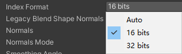 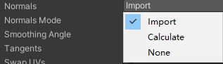 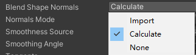 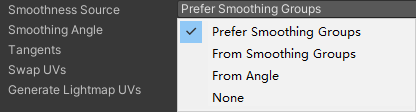 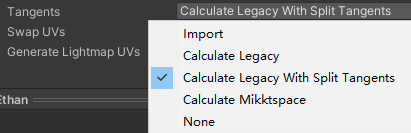 | |
知识点一 Model模型页签是设置什么的
该页签主要是用于设置
比如
模型比例设置
是否使导入模型中的摄像机和光源
网格压缩方式 等等相关信息
修改模型中存储的各种元素和属性
最终会影响在Unity中使用模型时的一些表现
知识点二 参数讲解03- Rig 操纵（骨骼）页签
知识点一 Rig操纵（骨骼）页签是用来干啥的
该页签主要是用于设置
如何将骨骼映射到导入模型中的网格，以便能够将其动画化
对于人形角色模型，需要分配或创建Avatar（替身信息）
对于非人形角色模型，需要在骨骼中确定根骨骼
简单来说Rig页签主要是设置骨骼和替身系统相关信息的
设置了他们，动画才能正常的播放
知识点二 面板基础参数讲解
知识点三 Avatar化身系统是什么
理解化身系统首先要知道骨骼动画是什么
通过我们之前基础知识的讲解和2D骨骼动画的讲解
相信大家已经了解骨骼动画是什么
3D动画的本质 也是骨骼动画
为制作好的模型绑定骨骼制作动画是模型动画的制作流程
形象的理解
对于人来说
人的整体结构都是一致的
另一个人能做的动作理论上来说我们是完全可以模仿出来的
而化身系统的本质，就是动作的模仿（复用）
我们可以把一个标准人形动作通过化身系统复用到其它人形模型上
只要保证他们的关节点对应关系是一致的
而这节课要学习的就是如何设置人形模型在化身系统中关节的对应关系
知识点四 化身系统设置讲解04- Animation 动画页签
01 : Animation动画页签概述
知识点一 Animation动画页签是用来干啥的
当我们选中包含动画剪辑的的模型时
该页签将显示动画设置相关的内容
动画剪辑是Unity动画的最小构成元素
代表一个单独的动作
当美术同学做好动画导出时建议将模型和动画文件分别导出
1.导出包含网格信息不包含动作信息模型
2.导出不包含网格信息包含动作信息的动作（模型）文件
具体的导出规则可以参考
1.如何导入外部创建的模型资源
https://docs.unity.cn/cn/2019.4/Manual/CreatingDCCAssets.html
2.使用多个模型文件来导入动画
https://docs.unity.cn/cn/2019.4/Manual/Splittinganimations.html
知识点二 Animation动画页签的4大部分
1.基础信息设置
2.动画剪辑属性基本设置
3.动画剪辑属性其它设置
4.预览窗口02 : Animation动画页签 基础信息设置
03 : Animation动画页签 动画剪辑基础信息设置
动画剪辑属性
04 : Animation动画页签 动画剪辑其它信息设置
05 : Animation动画页签 预览窗口
05- Materials 材质纹理页签
6- 3D 动画相关
01- 3D 动画的使用📎3D动画的使用 知识点 参数.xmind
知识点一 使用导入的3D动画
1.将模型拖入场景中
2.为模型对象添加Animator脚本
3.为其撞见Animator Controller动画控制器（状态机）
4.将想要使用的相关动作 拖入Animator Controller动画控制器（状态机）窗口
5.在Animator Controller动画控制器（状态机）窗口编辑动画关系（使用之前学习的状态机相关知识）
6.代码控制状态切换
知识点二 状态设置相关参数
我们可以选中状态机窗口中的某一个状态为其设置相关参数
我们可以称之为动画状态设置
主要设置的是 当前状态的播放速度等等细节
知识点三 连线设置相关参数
我们可以选中状态机窗口中的某一条箭头为其设置相关参数
我们可以称之为动画过渡设置
主要设置的是 从一个状态切换到另一个状态时 的表现效果和切换条件
总结
注意点
1.Has Exit Time是否启用 如果希望瞬间切换动画不需过多等待，取消该选项
2.Can Transition To self是否启用 如果希望自己不要打断自己，取消该选项练习题
using System.Collections;
using System.Collections.Generic;
using UnityEngine;
public class Lesson50_Exercises : MonoBehaviour
{
private Animator animator;
public float roundSpeed = 30;
// Start is called before the first frame update
void Start()
{
animator = this.GetComponent<Animator>();
}
// Update is called once per frame
void Update()
{
animator.SetInteger("Speed", (int)Input.GetAxisRaw("Vertical"));
if (Input.GetKeyDown(KeyCode.Space))
animator.SetBool("Jump", true);
this.transform.Rotate(Vector3.up, Input.GetAxisRaw("Horizontal") * roundSpeed * Time.deltaTime);
}
public void JumpOver()
{
animator.SetBool("Jump", false);
}
}02- 动画分层和遮罩
就是让 2 个不同的动画，某个区域不变化
动画分层的作用
游戏中会有这样的需求
人物健康状态时播放正常动画
人物非健康状态时播放特殊动画
比如血量低于一定界限，人物的大部分动作将表现为虚弱状态
我们可以利用动画分层来快速实现这样的功能
动画分层和动画遮罩结合使用
3D 游戏中我们常常会面对这样的需求
人物站立时会有开枪动作
人物跑动时会有开枪动作
人物蹲下时会有开枪动作
从表现上来看光是开枪动作可能就有 3 种
如果要让美术同学做 3 种开枪动作费时又费资源
我们是否可以这样做
比如开枪动画只影响上半身
下半身根据实际情况播放站立，跑动，蹲下动作
通过上下半身播放不同的动画就可以达到动画的组合播放
动画分层的主要就是达到这两个目的
1. 两套不同层动作的切换
2. 结合动画遮罩让两个动画叠加在一起播放
提升动画多样性，节约资源using System.Collections;
using System.Collections.Generic;
using UnityEngine;
public class Lesson51 : MonoBehaviour
{
private Animator animator;
void Start()
{
//1.新建一个动画层
//2.设置动画层参数
//3.在该层中设置状态机（注意：结合遮罩使用时默认状态一般为Null状态）
//4.根据需求创建动画遮罩
animator = this.GetComponent<Animator>();
animator.SetLayerWeight(animator.GetLayerIndex("MyLayer2"), 1);
}
}利用动画分层我们可以做到
1.上下半身播放两个动画进行组合，比如上半身扔炸弹，下半身待机移动蹲下
2.快速制作正常状态和受伤状态的动作切换练习题
Vertical，Horizontal 竖直和水平 对应的值（ 1，-1） 是根据 XY 轴来的
using System.Collections;
using System.Collections.Generic;
using UnityEngine;
public class Lesson50_Exercises : MonoBehaviour
{
private Animator animator;
public float roundSpeed = 30;
void Start()
{
animator = this.GetComponent<Animator>();
}
void Update()
{
animator.SetInteger("Speed", (int)Input.GetAxisRaw("Vertical"));
//Vertical 垂直轴 正向 1：W键、上方向键 ↑，负向‑1：S键、下方向键 ↓
if (Input.GetKeyDown(KeyCode.Space))
animator.SetBool("Jump", true);
this.transform.Rotate(Vector3.up, Input.GetAxisRaw("Horizontal") * roundSpeed * Time.deltaTime);
//Horizontal 水平轴 正向 1：D键、右方向键 →，负向‑1：A键、左方向键 ←
if (Input.GetKeyDown(KeyCode.J))
animator.SetTrigger("Fall");
if (Input.GetKeyDown(KeyCode.K))
animator.SetLayerWeight(animator.GetLayerIndex("New Layer 0"), 1);
if (Input.GetKeyDown(KeyCode.L))
animator.SetLayerWeight(animator.GetLayerIndex("New Layer 0"), 0);
}
public void JumpOver()
{
animator.SetBool("Jump", false);
}
}03- 动画 1D 混合
比如 从 待机 ->走路->跑步 可以通过 1 个参数的值进行控制。
| 功能截图 | 作用说明 | |
| 图1 Blend Tree 总览 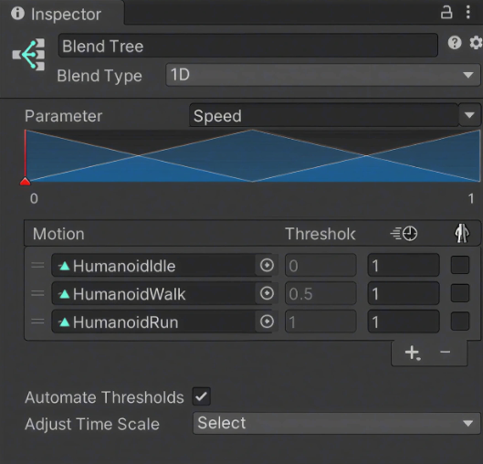 | 1D Blend Tree 总览与核心参数• Blend Type 选择 1D，Parameter 绑定 Speed：控制动作下的播放速度，作为混合轴输入。• Motion 列表中的 Idle / Walk / Run 按不同 Speed 阈值分布：Speed 值变化时在这几个动作间平滑过渡。• Automate Thresholds：勾选后引擎会在取值范围内平均分配各动作阈值；一般建议取消勾选，改为手动设置阈值，混合结果更准确。 | |
| 图2 Mirror 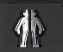 | 是否镜像动作（Mirror）控制该动画播放时是否进行镜像翻转，常用于左右对称动作的复用。例如：• 把「左手挥拳」动画镜像后变成「右手挥拳」，无需额外制作资源。• 在 Blend Tree 节点或动画剪辑上勾选 Mirror 即可生效。 | |
| 图3 Compute Thresholds 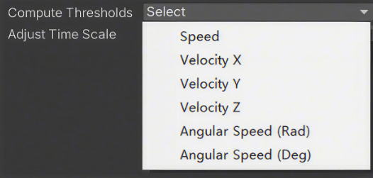 | Compute Thresholds（计算阈值的方式）指定从动画剪辑的根运动（Root Motion）中提取哪种数据来自动计算阈值：• Speed：速度• Velocity X / Y / Z：xyz 三个方向上的分速度• Angular Speed (Rad / Deg)：以弧度或角度表示的角速度举例：走路 1.5 单位/秒、慢跑 2.3 单位/秒、快跑 4 单位/秒时，阈值会按这些实际速度自动设定，从而驱动混合。 | |
| 图4 Adjust Time Scale 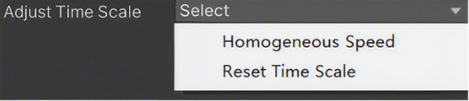 | Adjust Time Scale（调整时间刻度）调整混合时各动画的时间播放比例，常见选项：• Homogeneous Speed：均匀速度，各动画保持自身原有播放速度。• Reset Time Scale：重置时间刻度，将时间刻度归一化处理。通过该设置可以统一不同动画剪辑的节奏，避免混合后动作忽快忽慢。 |
知识点一 什么是动画混合
游戏动画中常见的功能就是在两个或者多个相似运动之间进行混合
比如
1. 根据角色的速度来混合行走和奔跑动画
2. 根据角色的转向来混合向左或向右倾斜的动作
你可以理解是高级版的动画过渡
之前我们学习的动画过渡是处理两个不同类型动作之间切换的过渡效果
而动画混合是允许合并多个动画来使动画平滑混合
知识点二 如何在状态机窗口创建动画混合状态
在 Animator Controller 窗口 右键 ->Create State->From New Blend Tree
知识点三 1D 混合的使用
1D 混合就是通过一个参数来混合子运动
注意：
往混合树里面加入动作时需要找到动画文件进行关联练习题
在之前练习题的基础上，通过1D混合树制作前进后退的功能
练习目标：理解 Speed 参数如何驱动 1D Blend Tree 在多个移动动画之间平滑过渡。
using System.Collections;
using System.Collections.Generic;
using UnityEngine;
public class Lesson52_Exercises : MonoBehaviour
{
private Animator animator;
private float dValue = 0.5f; //设置一个值改变移动
void Start()
{
animator = this.GetComponent<Animator>();
}
void Update()
{
animator.SetFloat("Speed", Input.GetAxis("Vertical")* dValue);
// -1是后跑 -0.5 是走路 0是待机 0.5是走路 1是奔跑， 这里乘以dvalue 0.5，是锁顶到走路
if (Input.GetKeyDown(KeyCode.LeftShift))
//通过更改dvalue实现游戏中按下 shift就奔跑的效果
dValue = 1;
if (Input.GetKeyUp(KeyCode.LeftShift))
dValue = 0.5f;
if (Input.GetKeyDown(KeyCode.Space)) //融合树 和 跳跃 结合
animator.SetTrigger("Jump");
}
}04- 动画 2D 混合
相当于 X Y 轴的感觉，控制方向
知识点一 1D 混合和 2D 混合
1D 混合是用一个参数控制动画的混合，之所以叫 1D 是因为一个参数可以看做是 1 维线性的
2D 混合你可以简单理解是用两个参数控制动画的混合，之所以叫 2D 是因为两个参数可以看做是 2 维平面 xy 轴的感觉
知识点二 2D 混合的种类
1.2D Simple Directional 2D 简单定向模式 运动表示不同方向时使用 比如向前、后、左、右走 [美术出资源 之出了跑或者走用这个]
2.2D Freeform Directional 2D 自由形式定向模式 同上 运动表示不同方向时使用 但是可以在同一方向上有多个运动 比如向前跑和走【四个方向上可以跑和走】
3.2D Freeform Cartesian 2D 自由形式笛卡尔坐标模式 运动不表示不同方向时使用 比如向前走不拐弯 向前跑不拐弯 向前走右转 向前跑右转【没有左右走，只有前后走，只有左右转向】
4.Direct 直接模式 自由控制每个节点权重，一般做表情动作等
知识点三 2D 混合的使用
知识点四 总结
前三种方式只是针对动作的不同采用不同的算法来进行混合的
第四种可以用多个参数进行融合
混合树中还可以再嵌入混合树，使用上是一致的，根据实际情况选择性使用练习题
通过2D混合树制作前进后退左右旋转的功能
using System.Collections;
using System.Collections.Generic;
using UnityEngine;
public class Lesson53_Exercises : MonoBehaviour
{
private Animator animator;
void Start()
{
animator = this.GetComponent<Animator>();
}
void Update()
{
animator.SetFloat("x", Input.GetAxis("Horizontal"));
animator.SetFloat("y", Input.GetAxis("Vertical"));
}
}05- 动画子状态机
状态机中的状态机
01知识点一 什么是子状态机
子状态机顾名思义就是在状态机里还有一个状态机
它的主要作用就是某一个状态时由多个动作状态组合而成的复杂状态
比如某一个技能它是由 3 段动作组合而成的，蹲下，开火，站起
当我们释放这个技能时会连续播放这 3 个动作
那么我们完全可以把他们放到一个子状态机中
02知识点二 创建子状态机
在 Animator Controller 窗口中右键 ->Create Sub‑State Machine
03知识点三 编辑子状态机
注意：子状态机和外部状态的相互连接方式练习题
在之前练习题的基础上，按 K 键可以触发一个动画子状态机状态
using System.Collections;
using System.Collections.Generic;
using UnityEngine;
public class Lesson53_Exercises : MonoBehaviour
{
private Animator animator;
void Start()
{
animator = this.GetComponent<Animator>();
}
void Update()
{
animator.SetFloat("x", Input.GetAxis("Horizontal"));
animator.SetFloat("y", Input.GetAxis("Vertical"));
if (Input.GetKeyDown(KeyCode.K))
animator.SetTrigger("Fire");
}
}06- 动画 Ik 控制
在骨骼动画中，构建骨骼的方法被称为正向动力学
它的表现形式是，子骨骼（关节）的位置根据父骨骼（关节）的旋转而改变
用我们人体举例子
当我们抬起手臂时，是肩部关节带动的整个手臂的运动，用父子骨骼理解的话就是父带动了子
而IK全称是Inverse Kinematics，翻译过来的意思就是反向动力学的意思
它和正向动力学恰恰相反
它的表现形式是，子骨骼（关节）末端的位置改变会带动自己以及自己的父骨骼（关节）旋转
用我们人体举例子
当我们拿起一个杯子的时候是用手掌去拿，以杯子为参照物，我们移动杯子的位置，手臂会随着杯子一起移动
用父子骨骼理解的话就是子带动了父1.在状态机的层级设置中 开启 IK 通道
2.继承MonoBehavior的类中
Unity定义了一个IK回调函数:OnAnimatorIK
我们可以在该函数中调用Unity提供的IK相关API来控制IK
3.Animator中的IK相关API
SetLookAtWeight 设置头部IK权重
SetLookAtPosition 设置头部IK看向位置
SetIKPositionWeight 设置IK位置权重
SetIKRotationWeight 设置IK旋转权重
SetIKPosition 设置IK对应的位置
SetIKRotation 设置IK对应的角度
AvatarIKGoal枚举四肢末端IK枚举
animator = this.GetComponent<Animator>();IK在游戏开发中的应用
1.拾取某一件物品
2.持枪或持弓箭瞄准某一个对象
等等我们可以简单理解这两个函数是两个和动画相关的特殊生命周期函数
他们在Update之后LateUpdate之前调用
他们会在每帧的状态机和动画处理完后调用
OnAnimatorIK在OnAnimatorMove之前调用
OnAnimatorIK中主要处理 IK运动相关逻辑
OnAnimatorMove主要处理 动画移动以修改根运动的回调逻辑
他们存在的目的只是多了一个调用时机，当每帧的动画和状态机逻辑处理完后再调用
using System.Collections;
using System.Collections.Generic;
using UnityEngine;
public class Lesson55 : MonoBehaviour
{
private Animator animator;
public Transform pos;
public Transform pos2;
private void OnAnimatorIK(int layerIndex)
{
01.头部IK相关
weight:LookAt全局权重0~1
bodyWeight:LookAt时身体的权重0~1
headWeight:LookAt时头部的权重0~1
eyesWeight:LookAt时眼镜的权重0~1
02.clampWeight:
0表示角色运动时不受限制，1表示角色完全固定无法执行LookAt，0.5表示只能够移动范围的一半
animator.SetLookAtWeight(1, 1f, 1f);
animator.SetLookAtPosition(pos.position);
animator.SetIKPositionWeight(AvatarIKGoal.RightFoot, 1);
animator.SetIKRotationWeight(AvatarIKGoal.RightFoot, 1);
animator.SetIKPosition(AvatarIKGoal.RightFoot, pos2.position);
animator.SetIKRotation(AvatarIKGoal.RightFoot, pos2.rotation);
}
private void OnAnimatorMove()
{
}
}练习题
通过2D混合树制作前进后退左右旋转的功能
using System.Collections;
using System.Collections.Generic;
using UnityEngine;
public class Lesson53_Exercises : MonoBehaviour
{
private Animator animator;
public Transform headPos;
//x方向鼠标旋转了多少角度
private float changeAngleX;
//y方向鼠标旋转了多少角度
private float changeAngleY;
// Start is called before the first frame update
void Start()
{
animator = this.GetComponent<Animator>();
}
// Update is called once per frame
void Update()
{
animator.SetFloat("x", Input.GetAxis("Horizontal"));
animator.SetFloat("y", Input.GetAxis("Vertical"));
if (Input.GetKeyDown(KeyCode.K))
animator.SetTrigger("Fire");
//角度就在累加
changeAngleX += Input.GetAxis("Mouse X");
changeAngleX = Mathf.Clamp(changeAngleX, -30, 30);
changeAngleY += Input.GetAxis("Mouse Y");
changeAngleY = Mathf.Clamp(changeAngleY, -30, 30);
}
private void OnAnimatorIK(int layerIndex)
{
animator.SetLookAtWeight(1, 1, 1);
Vector3 pos = Quaternion.AngleAxis(changeAngleX, Vector3.up) * (headPos.position + headPos.forward * 10);
pos = Quaternion.AngleAxis(changeAngleY, Vector3.right) * pos;
animator.SetLookAtPosition(pos);
}
}07- 动作目标匹配
比如跳跃到指定目标 位置 。
using System.Collections;
using System.Collections.Generic;
using UnityEngine;
public class Lesson56 : MonoBehaviour
{
private Animator animator;
public Transform targetPos;
void Start()
{
知识点一 什么是动画目标匹配
动画目标匹配主要指的是
当游戏中角色要以某种动作移动，该动作播放完毕后，人物的手或者脚必须落在某一个地方
比如：角色需要跳过踏脚石或者跳跃并抓住房梁
那么这时我们就需要动作目标匹配来达到想要的效果
知识点二 如何实现动画目标匹配
Unity中的Animator提供了对应的函数来完成该功能
使用步骤是
1.找到动作关键点位置信息（比如起跳点，落地点，简单理解就是真正可能产生位移的动画表现部分）
2.将关键信息传入MatchTargetAPI中
animator = this.GetComponent<Animator>();
知识点三 注意
调用匹配动画的时机有一些限制
1.必须保证动画已经切换到了目标动画上
2.必须保证调用时动画并不是处于过度阶段而真正在播放目标动画
如果发现匹配不正确，往往都是这两个原因造成的
3.需要开启Apply Root Motion
}
void Update()
{
if( Input.GetKeyDown(KeyCode.Space) )
{
animator.SetTrigger("Jump");
}
}
private void MatchTarget()
{
参数一：目标位置
参数二：目标角度
参数三：匹配的骨骼位置
参数四：位置角度权重
参数五：开始位移动作的百分比
参数六：结束位移动作的百分比
animator.MatchTarget(targetPos.position, targetPos.rotation, AvatarTarget.RightFoot, new MatchTargetWeightMask(Vector3.one, 1), 0.4f, 0.64f);
}
}08-状态机行为脚本 Statemachinebehaviour
状态机在某种状态时增加脚本实现某种功能。
知识点一 状态机行为脚本是什么？
状态机行为脚本时一类特殊的脚本,继承指定的基类
它主要用于关联到状态机中的状态矩形上
我们可以按照一定规则编写脚本
当进入、退出、保持在某一个特定状态时我们可以进行一些逻辑处理
简单解释就是为Animator Controller状态机窗口中的某一个状态添加一个脚本
利用这个脚本我们可以做一些特殊功能
比如
1.进入或退出某一状态时播放声音
2.仅在某些状态下检测一些逻辑，比如是否接触地面等等
3.激活和控制某些状态相关的特效
知识点二 如何使用状态机脚本
1.新建一个脚本继承StateMachineBehaviour基类
2.实现其中的特定方法进行状态行为监听
OnStateEnter 进入状态时，第一个Update中调用
OnStateExit 退出状态时，最后一个Update中调用
OnStateIK OnAnimatorIK后调用
OnStateMove OnAnimatorMove后调用
OnStateUpdate 除第一帧和最后一帧，每个Update上调用
OnStateMachineEnter 子状态机进入时调用，第一个Update中调用
OnStateMachineExit 子状态机退出时调用，最后一个Update中调用
3.处理对应逻辑
知识点三 状态机行为脚本和动画事件如何选择
状态机行为脚本相对动画事件来说更准确
但是使用起来稍微麻烦一些
根据实际需求选择使用using System.Collections;
using System.Collections.Generic;
using UnityEngine;
public class Lesson57_StateMachineBehaviour : StateMachineBehaviour
{
public string stateName;
public string musicName;
public override void OnStateEnter(Animator animator, AnimatorStateInfo stateInfo, int layerIndex)
{
if( stateInfo.IsName(stateName) )
Debug.Log("进入HumanoidIdle状态");
}
public override void OnStateExit(Animator animator, AnimatorStateInfo stateInfo, int layerIndex)
{
if (stateInfo.IsName("HumanoidIdle"))
Debug.Log("退出HumanoidIdle状态");
}
public override void OnStateIK(Animator animator, AnimatorStateInfo stateInfo, int layerIndex)
{
base.OnStateIK(animator, stateInfo, layerIndex);
}
public override void OnStateMove(Animator animator, AnimatorStateInfo stateInfo, int layerIndex)
{
base.OnStateMove(animator, stateInfo, layerIndex);
}
public override void OnStateUpdate(Animator animator, AnimatorStateInfo stateInfo, int layerIndex)
{
base.OnStateUpdate(animator, stateInfo, layerIndex);
if (stateInfo.IsName("HumanoidIdle"))
Debug.Log("处于HumanoidIdle状态");
}
public override void OnStateMachineEnter(Animator animator, int stateMachinePathHash)
{
base.OnStateMachineEnter(animator, stateMachinePathHash);
}
public override void OnStateMachineExit(Animator animator, int stateMachinePathHash)
{
base.OnStateMachineExit(animator, stateMachinePathHash);
}
}09- 状态机复用
就是状态机模版 ，比如 玩家和敌人 都有 走路跑步和待机状态。
知识点一 状态机复用是什么？
游戏开发时经常遇到这样的情况
有n个玩家和n个怪物，他们的动画状态机行为都是一致的，只是对应的动作不同而已
这时如果我们为他们每一个对象都创建一个状态机进行状态设置和过渡设置无疑是浪费时间的
所以状态机复用就是解决这一问题的方案
主要用于为不同对象使用共同的状态机行为
减少工作量 提升开发效率
知识点二 如何复用状态机
1.在Project窗口右键Create->Animator Override Controller
2.为Animator Override Controller文件在Inspector窗口关联基础的Animator Controller文件
3.关联需要的动画7- 角色控制器
控制角色移动，不受刚体影响
using System.Collections;
using System.Collections.Generic;
using UnityEngine;
public class Lesson59 : MonoBehaviour
{
private CharacterController cc;
private Animator animator;
// Start is called before the first frame update
void Start()
{
#region 知识点一 角色控制器是什么？
//角色控制器是让角色可以受制于碰撞，但是不会被刚体所牵制
//如果我们对角色使用刚体判断碰撞，可能会出现一些奇怪的表现
//比如：
//1.在斜坡上往下滑动
//2.不加约束的情况碰撞可能让自己被撞飞
//等等
//而角色控制器会让角色表现的更加稳定
//Unity提供了角色控制器脚本专门用于控制角色
//注意：
//添加角色控制器后，不用再添加刚体
//能检测碰撞函数
//能检测触发器函数
//能被射线检测
#endregion
#region 知识点二 角色控制器的使用
//1.参数相关
//2.代码相关
cc = this.GetComponent<CharacterController>();
animator = this.GetComponent<Animator>();
//关键参数
//是否接触了地面
if ( cc.isGrounded )
{
print("接触地面了");
}
//关键方法
//受重力作用的移动
//cc.SimpleMove(Vector3.forward * 10 * Time.deltaTime);
//不受重力作用的移动
//cc.Move(Vector3.forward * 10 * Time.deltaTime);
#endregion
}
// Update is called once per frame
void Update()
{
animator.SetInteger("Speed", (int)Input.GetAxisRaw("Vertical"));
cc.Move(this.transform.forward * 80 * Time.deltaTime * Input.GetAxisRaw("Vertical"));
if (cc.isGrounded)
{
print("接触地面了");
}
}
//当角色控制器想要判断和别的碰撞器产生碰撞时 使用该函数
private void OnControllerColliderHit(ControllerColliderHit hit)
{
print(hit.collider.gameObject.name);
}
//对角色控制器没用
//private void OnCollisionEnter(Collision collision)
//{
// print("碰撞触发");
//}
//可以检测触发器
private void OnTriggerEnter(Collider other)
{
print("触发器触发");
}
}练习题
using System.Collections;
using System.Collections.Generic;
using UnityEngine;
public class Lesson53_Exercises : MonoBehaviour
{
private Animator animator;
public Transform headPos;
//x方向鼠标旋转了多少角度
private float changeAngleX;
//y方向鼠标旋转了多少角度
private float changeAngleY;
private CharacterController cc;
public float speed = 10;
public float roundSpeed = 20;
// Start is called before the first frame update
void Start()
{
//通过2D混合树制作前进后退左右旋转的功能
animator = this.GetComponent<Animator>();
cc = this.GetComponent<CharacterController>();
}
// Update is called once per frame
void Update()
{
animator.SetFloat("x", Input.GetAxis("Horizontal"));
animator.SetFloat("y", Input.GetAxis("Vertical"));
if (Input.GetKeyDown(KeyCode.K))
animator.SetTrigger("Fire");
//角度就在累加
changeAngleX += Input.GetAxis("Mouse X");
changeAngleX = Mathf.Clamp(changeAngleX, -30, 30);
changeAngleY += Input.GetAxis("Mouse Y");
changeAngleY = Mathf.Clamp(changeAngleY, -30, 30);
cc.SimpleMove(this.transform.forward * speed * Time.deltaTime * Input.GetAxis("Vertical"));
this.transform.Rotate(Vector3.up, roundSpeed * Time.deltaTime * Input.GetAxis("Horizontal"));
}
private void OnAnimatorIK(int layerIndex)
{
animator.SetLookAtWeight(1, 1, 1);
Vector3 pos = Quaternion.AngleAxis(changeAngleX, Vector3.up) * (headPos.position + headPos.forward * 10);
pos = Quaternion.AngleAxis(changeAngleY, Vector3.right) * pos;
animator.SetLookAtPosition(pos);
}
}8- 导航寻路系统
01- 导航寻路系统概述
缺点：只能在编辑模式下进行烘焙，游戏场景模式下不行， 可通过动态障碍组件进行障碍设置
Unity中的导航寻路系统是能够让我们在游戏世界当中
让角色能够从一个起点准确的到达另一个终点
并且能够自动避开两个点之间的障碍物选择最近最合理的路径进行前往
Unity中的导航寻路系统的本质
就是在A星寻路算法的基础上进行了拓展和优化1.导航网格(NavMesh)的生成——要想角色能够在场景中自动寻路产生行进路径，那么必须得先有场景地形数据，
导航网格生成就是生成用于寻路的地形数据
2.导航网格寻路组件(NavMesh Agent)——寻路组件就是帮助我们根据地形数据计算路径让角色动起来的关键
3.导航网格连接组件(Off-Mesh Link)——当地形中间有断层，想让角色能从一个平面跳向另一个平面，
网格连接组件时关键
4.导航网格动态障碍物组件(NavMesh Obstacle)——地形中可能存在的可以移动或动态销毁的障碍物需要挂载的
组件用导航系统 让人物移动，要把 Animator 下的 Apply Root Motion（角色动画本身携带位移 / 旋转数据，动画驱动角色 Transform 移动） 取消。
Unity2022以上的导航寻路系统
02- 导航网格生成
unity 会 计算 COST 值小的区域用于 寻址03.导航寻路组件
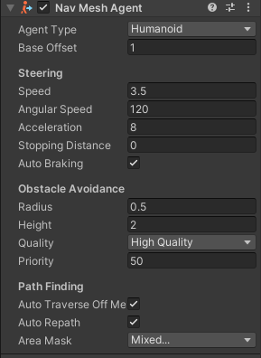 | Agent Type 代理类型 配合Agents页签使用Base Offset 基础偏移值，相对对象轴心点的高度偏移Steering 移动设置Speed 寻路时的最大移动速度（世界单位/秒）Angular Speed 寻路时转身的最大旋转速度（度/秒）Acceleration 最大加速度（世界单位/平方秒）Stopping Distance 当靠近目标点多少距离时，停止运动Auto Braking 自动制动（减速） 启用后，当到达目标时将减速，如果存在连续移动（比如巡逻移动）建议不要开启该选项Obstacle Avoidance 避障设置Radius 半径，用于计算障碍物和其它寻路对象之间的碰撞Height 高度，通过头顶障碍物时用于计算高度间隙使用Quality 障碍躲避品质，越高躲避障碍越准确，但是性能消耗较大，如果不想主动避开其它动态障碍，可以设置为无，则只会解析碰撞Priority 优先级，0~99， 避障时，数字较小的障碍物表示较高的优先级 优先级低的会忽略避障Path Finding 路径寻找规则Auto Traverse OffMesh Link 是否开启自动遍历网格外的其它网格连接 如果要自定义判断，则关闭此功能Auto Repath 是否开启自动重设路线 如果开启，当到达路径后段时会再次尝试寻路，当没有到达目标的路径时，会生成一条到达与目标位置最近的可达点Area Mask 寻路时，考虑的区域 如果寻路时不想考虑某些区域，则取消选中 塔防游戏中常见的功能 |
using System.Collections;
using System.Collections.Generic;
using UnityEngine;
using UnityEngine.AI;
public class Lesson62 : MonoBehaviour
{
public NavMeshAgent agent;
// Start is called before the first frame update
void Start()
{
#region 知识点一 导航网格寻路组件是用来干什么的？
//通过上节课导航网格生成知识点的学习
//我们已经准备好了地形相关的数据
//知道地形上哪些地方可以到达，哪些不能
//那么寻路组件的作用就是帮助我们让角色可以在地形上准确的移动起来
//寻路组件的本质就是根据烘焙出的寻路网格信息
//通过基于A星寻路的算法计算出行进路径让我们在该路径上移动起来
#endregion
#region 知识点二 寻路组件参数相关
//导航网格寻路组件
//Nav Mesh Agent（导航网格代理人）
#endregion
#region 知识点三 寻路组件代码相关
//使用网格相关脚本需要引用命名空间
//UnityEngine.AI
#region 常用内容
//自动寻路设置目标点
//agent.SetDestination()
//停止寻路
//agent.isStopped = true;
#endregion
#region 不常用内容
#region 变量
//关键变量
//1.面板参数相关 速度 加速度 旋转速度等等
print(agent.speed);
print(agent.acceleration);
print(agent.angularSpeed);
//2.其它重要属性
//2-1当前是否有路径
if( agent.hasPath )
{
}
//2-2代理目标点 可以设置 也可以得到
print(agent.destination);
//2-3是否停止 可以得到也可以设置
print(agent.isStopped);
//2-4当前路径
print(agent.path);
//2-5路径是否在计算中
if( agent.pathPending )
{
}
//2-6路径状态
print(agent.pathStatus);
//2-7是否更新位置
agent.updatePosition = true;
//2-8是否更新角度
agent.updateRotation = true;
//2-9代理速度
print(agent.velocity);
#endregion
#region 方法
//手动寻路
//计算生成路径
NavMeshPath path = new NavMeshPath();
if( agent.CalculatePath(Vector3.zero, path) )
{
}
//设置新路径
if(agent.SetPath(path))
{
}
//清除路径
agent.ResetPath();
//调整到指定点位置
agent.Warp(Vector3.zero);
#endregion
#endregion
#endregion
}
// Update is called once per frame
void Update()
{
if( Input.GetMouseButtonDown(0) )
{
RaycastHit hit;
if( Physics.Raycast(Camera.main.ScreenPointToRay(Input.mousePosition), out hit ) )
{
print(hit.collider.name);
agent.isStopped = false;
//让对象朝目标点移动 先生成行进路径 然后再移动
agent.SetDestination(hit.point);
}
}
if( Input.GetKeyDown(KeyCode.Space) )
{
agent.isStopped = true;
}
}
}练习题
在场景上加入一个角色，可以通过鼠标右键点击控制场景上角色的移动，要切换动画
using System.Collections;
using System.Collections.Generic;
using UnityEngine;
using UnityEngine.AI;
public class Lesson62_Exercises : MonoBehaviour
{
private NavMeshAgent agent;
private Animator animator;
// Start is called before the first frame update
void Start()
{
agent = this.GetComponent<NavMeshAgent>();
animator = this.GetComponent<Animator>();
}
// Update is called once per frame
void Update()
{
if( Input.GetMouseButtonDown(0) )
{
RaycastHit hit;
if( Physics.Raycast(Camera.main.ScreenPointToRay(Input.mousePosition), out hit) )
{
print(hit.collider.name);
agent.SetDestination(hit.point);
}
}
if( agent.velocity == Vector3.zero )
animator.SetInteger("Speed", 0);
else
animator.SetInteger("Speed", 1);
}
}04 导航网格外连接组件
| 网格外连接组件Start 起始点End 结束点Cost Override 覆盖消耗值 负数或0则使用所属Area区域中的消耗值 如果为正数，则使用Area区域寻路消耗值*正数代表该连接点的寻路消耗 相当于我们可以自定义连接点的寻路消耗 主要用来解决当有"步行"和连接点都可以到达某一个目标时，希望优先选择步行区域，但是步行路径明显更远时修改该值Bi Directional 是否开启双向连接点 开启后可以从Start到End，反之也可以 如果关闭，则只能Start到EndActivated 是否启用该连接点 如果关闭，则自动寻路时相当于失效Auto Update Positions 是否自动更新位置 如果启用 当开始和结束位置改变时，导航网格也将更新 如果不启用，即使改变了开始结束位置，也会按照刚开始的位置进行计算 |
using System.Collections;
using System.Collections.Generic;
using UnityEngine;
using UnityEngine.AI;
public class Lesson63 : MonoBehaviour
{
private NavMeshAgent agent;
// Start is called before the first frame update
void Start()
{
#region 知识点一 网格外连接组件是什么？
//我们在烘焙地形数据的时候
//可以生成网格外连接
//但是它是满足条件的都会生成
//而且是要在编辑模式下生成
//如果我们只希望两个未连接的平面之间只有有限条连接路径可以跳跃过去
//并且运行时可以动态添加
//就可以使用网格外连接组件
//达到“指哪打哪”的效果
#endregion
#region 知识点二 网格外连接组件的使用
//1.使用两个对象作为两个平面之间的连接点（起点和终点）
//2.添加Off Mesh Link脚本进行关联
//3.设置参数
agent = this.GetComponent<NavMeshAgent>();
#endregion
}
// Update is called once per frame
void Update()
{
if( Input.GetMouseButtonDown(0) )
{
RaycastHit hit;
if(Physics.Raycast(Camera.main.ScreenPointToRay(Input.mousePosition), out hit))
{
agent.SetDestination(hit.point);
}
}
}
}05 导航网格动态障碍组件
| Shape 动态障碍的形状Capsule：胶囊 Box：盒装Carve： 是否开启雕刻功能 开启后，障碍物会在导航网格中挖一个孔，所谓挖孔就是会生成对应的网格信息，认为这篇区域无法前往如果动态障碍物是固定不动的，建议开启，比如阻碍物门木桶栅栏等等 如果动态障碍物是频繁移动的，建议不开启该功能，比如汽车和玩家Move Threshold： 移动阈值 当障碍物移动超过该距离时，会认为其为移动状态，会更新移动的孔Time To Stationary： 障碍物作为静止状态需要等待的时间，单位为秒 当静止时间超过该值会认为真正静止了Carve Only Stationary： 只有在静止状态时才会计算孔 |
using System.Collections;
using System.Collections.Generic;
using UnityEngine;
using UnityEngine.AI;
public class Lesson64 : MonoBehaviour
{
private NavMeshAgent agent;
// Start is called before the first frame update
void Start()
{
#region 知识点一 导航网格动态障碍组件用来干啥？
//在游戏中常常会有这样的一个功能
//场景中有一道门，如果这道门没有被破坏是不能自动导航到门后场景的
//只有当这道门被破坏了，才可以通过此处前往下一场景
//而类似这样的物体本身是不需要进行寻路的所以没有必要为它添加NavMeshAgent脚本
//这时就会使用动态障碍组件实现该功能
#endregion
agent = this.GetComponent<NavMeshAgent>();
#region 知识点二 导航动态障碍物组件的使用
//1.为需要进行动态阻挡的对象添加NavMeshObstacle组件
//2.设置相关参数
//3.代码逻辑控制其的移动或者显隐
#endregion
}
// Update is called once per frame
void Update()
{
if(Input.GetMouseButtonDown(0))
{
RaycastHit hit;
if( Physics.Raycast(Camera.main.ScreenPointToRay(Input.mousePosition), out hit) )
{
agent.SetDestination(hit.point);
}
}
}
}练习题
在 场景中加入一个阻碍玩家前进的动态障碍物，顽疾摧毁它才可以前往下一个区域。
using System.Collections;
using System.Collections.Generic;
using UnityEngine;
using UnityEngine.AI;
public class Lesson62_Exercises : MonoBehaviour
{
private NavMeshAgent agent;
private Animator animator;
// Start is called before the first frame update
void Start()
{
agent = this.GetComponent<NavMeshAgent>();
animator = this.GetComponent<Animator>();
}
// Update is called once per frame
void Update()
{
if( Input.GetMouseButtonDown(0) )
{
RaycastHit hit;
if( Physics.Raycast(Camera.main.ScreenPointToRay(Input.mousePosition), out hit) )
{
print(hit.collider.name);
agent.SetDestination(hit.point);
}
}
if( Input.GetMouseButtonDown(1) )
{
RaycastHit hit;
if (Physics.Raycast(Camera.main.ScreenPointToRay(Input.mousePosition), out hit, 1000, 1 << LayerMask.NameToLayer("Wall")))
{
hit.collider.gameObject.SetActive(false);
}
}
if( agent.velocity == Vector3.zero )
animator.SetInteger("Speed", 0);
else
animator.SetInteger("Speed", 1);
}
}